한 코끼리가 메카의 카바를 향해 진군한 그해, 한 고아 아이가 사막의 한 도시에서 태어났다. 그 아이를 사람들은 사십 년 뒤에야 진짜로 알아본다.
서기 570년경, 아라비아 반도 서쪽 해안의 메마른 골짜기에 자리한 도시 메카에서 한 사내아이가 태어났다. 메카는 농사가 거의 불가능한 바위와 모래의 분지였다. 그런 곳에 도시가 선 이유는 단 하나, 그 한가운데에 카바라 불리는 검은 정육면체의 신전이 있었기 때문이다. 아라비아 전역의 부족들이 해마다 그 신전으로 순례를 왔고, 순례 기간에는 부족 간의 약탈과 보복이 금지되는 성스러운 달이 지켜졌다. 그 평화의 그늘 아래에서 메카는 카라반 무역의 중심지로 번성했다. 아이는 그 무역 도시의 지배 부족인 쿠레이쉬의, 그중에서도 카바 관리를 맡아온 명문 하심 가에서 태어났다. 그러나 가문의 영예와 달리 그의 출발은 가난하고 외로웠다.
아버지 압드 알라는 아이가 태어나기 두 달 전, 시리아 무역에서 돌아오는 길에 야트리브(훗날의 메디나) 근처에서 병으로 죽었다. 어머니 아미나는 그 충격 속에서도 아들을 무사히 낳았다. 아랍 귀족의 관습대로 갓난아이는 사막 유목민 베두인의 유모에게 맡겨졌다. 깨끗한 사막 공기와 순수한 아랍어를 익히게 하기 위함이었다. 그를 키운 유모 할리마의 이름은 후대 전승에 깊이 새겨졌다. 그러나 아이가 여섯 살이 되던 해 어머니 아미나마저 여행 도중 세상을 떠났다. 할아버지 압드 알 무탈리브가 그를 거두었으나, 그 할아버지도 그가 여덟 살이 되던 해에 죽었다. 두 살에 아버지를, 여섯 살에 어머니를, 여덟 살에 할아버지를 잃은 셈이다. 그 후 큰아버지 아부 탈리브가 그를 거두어 평생 보호한다. 한 사람의 유년이 이렇게 거듭된 상실로 채워졌다는 사실은, 후일 꾸란이 거듭 강조하는 고아를 돌보라는 명령의 한 뿌리가 된다.
그가 태어난 그해를 아랍 전승은 코끼리의 해라 부른다. 예멘을 다스리던 기독교계 총독 아브라하가 코끼리를 앞세운 군대를 끌고 메카의 카바를 무너뜨리러 북상했다. 아브라하는 자기 수도 사나에 큰 성당을 짓고 아라비아의 순례를 그쪽으로 돌리려 했고, 카바는 그 경쟁자였다. 그러나 메카 어귀에서 천연두 혹은 발진을 동반한 한 역병이 군대를 덮쳐 코끼리 부대가 무너지고 후퇴했다. 후일 꾸란 105장 코끼리의 수라(알 필)가 이 사건을 짧게 노래한다. 새 떼가 돌을 떨어뜨려 군대를 흩었다는 것이다. 역사학자들은 실제 원인을 전염병으로 추정하지만, 그 시대 아랍인들에게 이 사건은 카바를 지키는 한 보이지 않는 힘의 증거로 깊이 각인되었다. 한 외부의 위협이 메카를 보호한 신의 첫 표징이라 후세 사람들은 읽었다.
고아로 자란다는 것은 그 시대 아라비아에서 단순히 불쌍한 처지가 아니라, 생존 자체가 위태로운 자리였다. 보호해 줄 부모가 없는 아이는 부족 사회의 보호망 바깥으로 밀려나기 쉬웠고, 상속과 권리를 빼앗기기 일쑤였다. 무함마드가 큰아버지의 그늘 아래 가까스로 살아남았다는 사실, 그리고 평생 그 약자의 처지를 잊지 않았다는 사실은 그의 가르침 전체를 관통한다. 꾸란이 거듭 고아를 박대하지 말라, 그의 재산을 삼키지 말라고 외치는 것은 추상적 도덕이 아니라 한 고아였던 사람의 절실한 기억에서 나온 것이다. 한 사람의 가장 깊은 상처가 한 종교의 가장 굳건한 윤리가 된 셈이다.
아이의 이름은 무함마드, 아랍어로 거듭 칭송받는 자라는 뜻이다. 흥미로운 사실 하나. 이 이름은 그 시대 아랍에서 매우 드문 이름이었다. 할아버지가 한 꿈을 꾸고 이 낯선 이름을 골랐다는 전승이 있다. 그러나 그가 죽은 뒤 이 이름은 이슬람 세계에서 가장 흔한 사내아이 이름이 되었고, 오늘날에는 그 변형까지 합치면 지구상에서 가장 많은 사람이 쓰는 남자 이름 가운데 하나다. 한 사람의 이름이 한 문명의 이름이 된 셈이다.
탄생 당시의 메카
위치아라비아 반도 서부 히자즈 지방의 건조한 분지
지배 부족쿠레이쉬 (카바 관리·카라반 무역 장악)
카바 신상약 360개의 우상이 안치
주요 산업시리아·예멘을 잇는 향료·가죽 중계 무역
성월 관습순례 기간 약탈·보복 금지의 휴전
그가 태어난 아라비아 반도는 두 거대 문명의 틈새였다. 북서쪽에는 기독교를 국교로 삼은 비잔티움 제국이, 북동쪽에는 조로아스터교를 받든 사산 페르시아가 있었다. 두 제국은 시리아와 메소포타미아를 두고 수백 년간 싸웠고, 그 사이의 아라비아는 어느 쪽에도 완전히 속하지 않은 거친 변경이었다. 반도의 남쪽 예멘은 한때 향료 무역으로 번성했으나 이 무렵 쇠락해 있었고, 그 공백을 메카 같은 중부 히자즈의 무역 도시들이 채우고 있었다. 무함마드의 일생은 바로 이 두 제국이 마지막 사투로 서로를 소진하던 시기와 정확히 겹친다. 한 줌의 사막 부족이 두 제국을 압도하는 미증유의 사건이 가능했던 것은, 그가 등장한 시점 자체가 세계사의 한 빈틈이었기 때문이다.
큰아버지 아부 탈리브의 집은 부유하지 않았다. 그러나 그는 조카를 친자식처럼 데리고 다녔다. 한 고아가 한 큰아버지의 그늘에서 무역과 사막의 길을 배우며 자란다. 그 길 위에서 만난 사람들, 그 길 위에서 본 도시들, 그 길 위에서 들은 다른 신들의 이야기가 모두 후일 한 책 속으로 흘러든다. 사막의 한 도시에서 태어난 한 고아가 한 세계의 한가운데로 걸어 나오는 긴 여정이 이렇게 시작되었다.
곁가지 — 두 가슴 가르기 전설
아랍 전승에 따르면 어린 무함마드가 한 번 두 천사를 만났다 한다. 두 천사가 그를 눕히고 그의 가슴을 갈라 심장을 꺼내 한 검은 점을 닦아낸 다음 다시 가슴에 넣었다 한다. 그것이 샤크 알 사드르, 가슴 가르기다. 후일 꾸란 94장 마음 펴기의 수라가 그 이야기를 짧게 가리킨다. 그러나 학자들은 이 일화의 사실성을 의심한다. 후세 신화의 한 부분일 가능성이 크다. 한 사람의 평생을 이끌어 갈 한 신적 표지의 가장 이른 흔적을 그 시대 사람들이 어떤 사건으로든 채우려 했다.
[Ibn Isḥāq, Sīrat Rasūl Allāh · Encyclopaedia of Islam, "Muḥammad"]
곁가지 2 — 자힐리야, 무지의 시대
무슬림은 이슬람 이전의 아라비아를 자힐리야라 부른다. 흔히 무지의 시대로 옮기지만, 더 정확히는 거칠고 자제하지 못하는 시대라는 뜻에 가깝다. 글이 없던 것은 아니다. 오히려 자힐리야의 아랍은 세계에서 가장 정교한 구전 시 문화를 가지고 있었다. 해마다 메카 근처 우카즈 시장에서 시 경연이 열렸고, 가장 빼어난 시는 카바의 벽에 황금 글씨로 걸렸다 하여 무알라카트(걸린 시들)라 불렸다. 그러나 그 화려한 시 문화의 이면에는 끝없는 부족 보복, 여아 매장의 관습, 노예제, 약자에 대한 무자비함이 있었다. 후일 꾸란이 그 시대의 시적 운율을 그대로 빌리면서도 그 시대의 윤리를 정면으로 뒤집은 것은 우연이 아니다. 한 문명의 가장 빛나는 형식 안에 한 가지 새로운 내용이 부어진 셈이다.
[Ibn Hishām, Sīra · Toshihiko Izutsu, Ethico-Religious Concepts in the Qurʾān]
비잔티움과 페르시아
지중해 세계의 두 초강대국이 서로를 갉아먹고 있었다. 비잔티움(동로마)의 대제 유스티니아누스 1세가 불과 몇 해 전 세상을 떠났고, 동방에서는 사산 페르시아의 호스로 1세 아누시르반이 강성했다. 두 제국이 메소포타미아와 시리아를 두고 끝없이 싸우는 동안, 그 어느 쪽도 아라비아 사막의 안쪽까지는 손을 뻗지 못했다. 그 힘의 공백이 한 새로운 세력이 자랄 자리를 비워두고 있었다.
중국
남북조의 분열이 막바지였다. 북주가 흔들리고 수(隋)가 일어서는 중이었다. 약 십이 년 뒤 수 문제 양견이 즉위해 약 사백 년 만에 중국을 다시 하나로 합친다.
한반도
고구려·백제·신라 삼국 시대의 중반. 신라에서는 곧 진평왕이 즉위해 반세기 가까이 나라를 다스린다. 한반도가 삼국의 각축 속에서 불교를 받아들이던 시기다.
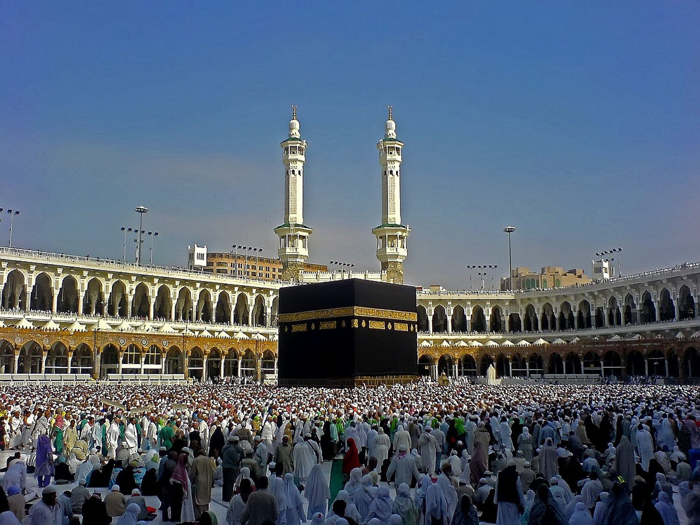
카바 · 메카 그란드 모스크 중앙의 검은 정육면체 · 무함마드가 태어난 도시의 심장이자 오늘 모든 무슬림이 향하는 키블라 [Wikimedia · Public Domain]
II
AD 582-595 · 메카-시리아
사막 양치기와 시리아 무역 길
강의 듣기
한 고아가 큰아버지의 그늘에서 자랐다. 처음에는 양치기로, 다음에는 무역 상인으로. 그가 한 가지 별명을 얻는다. 알 아민. 믿을 만한 자.
큰아버지 아부 탈리브의 집은 부유하지 않았다. 식구는 많고 살림은 빠듯했다. 그래서 어린 무함마드는 일찍부터 메카 외곽에서 양과 염소를 치며 집안의 입을 덜었다. 후일 그는 이 시절을 부끄러워하지 않고 오히려 자랑스럽게 말했다. 하디스에 그의 말이 전한다. 신이 보내신 모든 예언자가 양을 쳤다. 무사도, 다윗도, 그리고 나도 그러했다. 양치기의 일은 단조롭지만 한 사람을 단련시킨다. 흩어지는 가축을 한곳에 모으는 인내, 맹수와 도둑을 살피는 경계, 끝없는 침묵 속에서 별과 모래와 마주하는 시간. 후세 무슬림은 양치기 경험이 한 무리를 이끄는 지도자의 첫 학교였다고 읽는다. 흩어진 양 떼를 모는 손이 훗날 흩어진 부족을 모으게 된다는 것이다.
열두 살 무렵부터 그는 큰아버지의 카라반을 따라 북쪽 시리아로 향했다. 메카에서 시리아의 보스라와 다마스쿠스까지는 천 킬로미터가 넘는 사막 길이었고, 한 번 가는 데 한 달 가까이 걸렸다. 낙타 등에 향료와 가죽과 건포도를 싣고, 밤이면 별을 보며 방향을 잡고, 우물과 우물 사이의 거리를 목숨처럼 외우는 길이었다. 이 길이 어린 무함마드에게 준 가장 큰 선물은 바깥세상이었다. 메카의 우상 숭배만이 세계의 전부가 아니라는 것, 북쪽에는 한 신만을 섬기는 기독교인과 유대인이 있다는 것을 그는 두 눈으로 보았다.
이 시리아 길에서 가장 유명한 일화가 수도사 바히라의 이야기다. 시리아 보스라 근처의 한 기독교 수도사 바히라가 카라반을 맞아 식사를 대접하다가 어린 무함마드를 유심히 살폈다 한다. 그의 두 어깨뼈 사이에 한 점이 있는 것을 보고 예언자의 인장이라 불렀다는 것이다. 바히라가 큰아버지에게 당부한다. 이 아이를 시리아 깊숙이 데려가지 마십시오. 비잔티움 사람들이 그를 알아보면 해치려 할 것입니다. 학자들은 이 일화의 역사성을 강하게 의심한다. 후대 무슬림이 한 청년의 예언자 자격을 미리 정당화하려 만든 전승일 가능성이 크고, 일부 학자는 거꾸로 무함마드가 기독교 교리를 수도사에게서 배웠다는 비방을 반박하려는 의도까지 읽는다. 그러나 그 전승의 껍질을 벗기면 한 가지 단단한 사실이 남는다. 청년 무함마드가 무역 길에서 유대교와 기독교의 일신교를 직접 접했다는 것이다. 후일 꾸란에 거듭 등장하는 이브라힘(아브라함), 무사(모세), 이사(예수)는 그 만남의 먼 메아리다.
이 무역의 경험은 단지 견문에 그치지 않았다. 카라반을 이끄는 일은 곧 사람을 다루고, 위험을 가늠하고, 약속을 지켜 신뢰를 쌓는 일이었다. 사막의 상인은 한 번의 거짓으로 평생의 거래처를 잃는다. 무함마드는 이 세계에서 정직이 곧 자본이라는 사실을 몸으로 배웠다. 또한 그는 각지에서 온 순례자와 상인들을 통해 아라비아 안의 수많은 신앙을 접했다. 카바의 다신교, 북쪽의 기독교와 유대교, 그리고 우상도 신상도 거부하며 막연히 한 창조주를 믿던 하니프라 불린 소수의 사람들이 있었다. 후대 사료는 무함마드가 예언 이전부터 이 하니프적 경향, 곧 우상에 등을 돌리고 홀로 한 신을 더듬어 찾는 성향을 보였다고 전한다. 히라 동굴의 칩거는 그 더듬음의 한 형태였다.
그렇게 성장한 청년에게 메카 사람들이 한 별명을 붙였다. 알 아민, 믿을 만한 자라는 뜻이다. 그에게 귀중품을 맡기면 한 점 어김없이 돌아왔고, 그가 한 말은 지켜졌다. 끝없는 약탈과 거짓 맹세가 흔하던 시대에, 한 청년의 한결같은 정직이 도시 전체의 별명으로 굳어질 만큼 두드러졌다. 이 평판은 후일 그가 예언자로 나설 때 가장 강력한 자산이 된다. 그가 산 위에서 한 신을 선포했을 때, 적들조차 그를 거짓말쟁이라 부르기는 어려웠다. 평생 거짓을 말하지 않던 사람이 갑자기 가장 큰 거짓을 꾸며냈다고 믿기는 어려웠던 것이다.
곁가지 — 카바의 흑석을 옮긴 청년
그가 서른다섯 살 무렵에 메카에 한 가지 큰 분쟁이 있었다. 카바 신전이 홍수로 한 번 무너져 다시 짓는 중이었다. 카바의 한 모퉁이에 흑석이라는 검은 돌이 박혀 있다. 아라비아 부족들이 그 돌을 다시 그 자리에 박는 영예를 두고 다투었다. 어떤 부족이 그 돌을 옮길 권리를 가질 것인가. 청년 무함마드가 한 가지 해법을 냈다. 큰 천 한 장을 펴서 그 가운데에 흑석을 놓았다. 네 부족의 한 명씩 그 천의 네 모서리를 잡고 함께 들었다. 흑석이 카바 앞에 닿았을 때 무함마드 자신이 그 돌을 손으로 들어 자리에 박았다. 모든 부족이 흑석을 함께 옮겼다는 한 가지 영예를 함께 나누었다. 한 청년의 한 가지 작은 해법이 큰 분쟁을 풀었다.
청년 무함마드가 한 동맹에 참여한 일이 전한다. 한 예멘 상인이 메카의 한 귀족에게 물건을 팔고 대금을 떼였다. 외지인이라 보복할 부족도 없었다. 그가 카바 앞에서 큰 소리로 억울함을 호소하자, 메카의 몇몇 가문이 모여 한 가지 맹세를 했다. 누구든 메카에서 부당하게 빼앗긴 자가 있으면 우리가 그의 권리를 되찾아 주겠다. 이것을 히라의 동맹(힐프 알 푸둘)이라 부른다. 청년 무함마드가 그 자리에 함께 있었다. 후일 예언자가 된 그는 이렇게 회고했다 한다. 나는 압드 알라의 집에서 그 동맹에 참여했다. 붉은 낙타를 다 준다 해도 그 자리를 바꾸지 않겠다. 지금 누가 그 이름으로 나를 부른다면 나는 곧장 응할 것이다. 한 종교의 창시자가 되기 훨씬 전부터, 그의 마음은 이미 약자와 외지인 편에 서 있었다.
[Ibn Hishām, Sīra · Ṣaḥīḥ al-Bukhārī]
비잔티움·페르시아
두 제국이 평화와 전쟁을 번갈았다. 사산 페르시아에서는 호스로 2세 파르비즈가 곧 즉위해 비잔티움과의 마지막 대전쟁을 준비한다. 이 전쟁이 두 제국을 모두 탈진시켜, 한 세대 뒤 아랍 군대가 두 제국의 변경을 손쉽게 무너뜨릴 무대를 만든다.
인도
북인도에서는 굽타 제국이 무너진 뒤 여러 왕국이 난립했다. 곧 하르샤바르다나가 등장해 북인도를 한때 통일한다. 같은 시기 데칸에서는 찰루키아 왕조가 일어선다.
Tabula I · 메카의 시간 (570–622)
탄생, 첫 계시, 박해 — 한 도시 안에서의 사십여 년
아라비아 반도 비잔티움·사산 변경 카라반 무역로 망명 해로
한 예언자의 첫 사십여 년은 단 두 도시, 메카와 그 외곽의 히라 동굴 사이에서 흘렀다. 박해가 심해지자 일부 신도가 홍해 건너 기독교 왕국 아비시니아로 처음 피난한다.
III
AD 595 · 메카
카디자 — 첫 부인이자 첫 후원자
강의 듣기
한 부유한 과부 상인이 한 정직한 청년을 자기 무역단의 책임자로 고용했다. 그 청년의 정직을 본 다음 그녀가 그에게 청혼했다.
메카에 한 부유한 과부 상인이 있었다. 이름은 카디자 빈트 쿠와일리드. 그녀는 명문 출신으로 두 번 결혼했고 두 번 남편을 잃었으나, 좌절하는 대신 직접 카라반 사업을 운영해 메카에서 가장 부유한 여인 가운데 한 사람이 되었다. 그 시대 아라비아에서 여성이 독립적으로 큰 재산과 사업을 일군 것은 드문 일이었다. 그녀는 사람을 보는 눈이 깊었다. 도시에 떠도는 알 아민이라는 별명의 청년에 대해 듣고, 그녀는 무함마드를 자기 무역단의 책임자로 고용해 시리아로 보냈다.
무역 길에서 무함마드는 평소보다 큰 이익을 남겨 돌아왔다. 그를 수행한 카디자의 종 마이사라가 돌아와 그녀에게 두 가지를 보고했다. 첫째는 거래에서 한 점 어김이 없었다는 것이고, 둘째는 후대 전승이 덧붙인 신비한 이야기다. 정오의 뜨거운 햇볕 아래에서 한 조각 구름이 늘 그의 머리 위에 그늘을 드리우며 따라왔다는 것이다. 학자들은 뒤의 이야기를 후대의 신비화로 본다. 그러나 앞의 보고만으로도 카디자의 마음에는 한 가지 결정이 굳어지고 있었다. 그녀가 찾던 것은 재산을 맡길 사람이 아니라 인생을 함께할 사람이었다.
카디자라는 인물은 그 시대 아라비아 여성의 통념을 깨는 존재였다. 흔히 이슬람 이전과 이후의 아라비아 여성상을 단순하게 대비하지만, 실제 역사는 더 복잡하다. 자힐리야 시대에도 카디자처럼 독립적으로 사업을 운영하고 스스로 배우자를 고르는 여성이 있었고, 동시에 여아를 산 채로 묻는 잔혹한 관습도 있었다. 무함마드의 가르침은 여아 매장을 강력히 금하고 여성에게 상속권과 이혼 시 권리를 부여했다는 점에서 그 시대 기준으로는 진보적이었으나, 후대 무슬림 사회의 여성 지위는 시대와 지역에 따라 크게 달랐다. 한 종교의 출발점에 있던 원칙과 그 후 천사백 년의 실제 역사를 구분해 보는 일은, 무함마드를 이해하는 데에도 중요하다.
관습을 깨고 청혼을 먼저 건넨 쪽은 그녀였다. 한 친척을 통해 뜻을 전했고, 무함마드가 받아들였다. 전승은 그녀가 마흔, 그가 스물다섯이었다고 전한다. 큰아버지 아부 탈리브가 결혼식을 주재했다. 주목할 점은 이 결혼이 그 시대 아라비아에 흔하던 일부다처를 거치지 않았다는 것이다. 카디자가 살아 있던 약 이십오 년 동안 무함마드는 다른 부인을 두지 않았다. 후일 메디나 시절 그가 여러 부인을 둔 사실과 견주어, 카디자와의 단혼은 두 사람의 관계가 어떠했는지를 가장 분명히 말해 준다.
두 사람 사이에 여섯 자녀가 태어났다. 두 아들 카심과 압드 알라는 어려서 죽었고, 네 딸이 자랐다. 그 가운데 막내가 파티마다. 후일 사촌 알리와 결혼해 하산과 후세인을 낳고, 시아파에게 예언자 가문(아흘 알 바이트)의 정신적 어머니로 추앙받는 사람이다. 무함마드의 직계 후손은 모두 파티마와 알리를 통해 이어진다. 오늘 사이이드나 샤리프라 불리며 예언자의 후예를 자처하는 가계가 모두 이 한 딸에게서 비롯한다.
카디자와 그 자녀들
혼인약 595년, 카디자 40세·무함마드 25세 (전승)
결혼 기간약 25년, 카디자 생전 단혼 유지
아들카심·압드 알라 (모두 유아기 사망)
딸자이납·루카이야·움 쿨숨·파티마
직계 후손막내 파티마와 알리를 통해서만 이어짐
카디자가 무함마드에게 준 것은 두 가지 안정이었다. 가족의 안정과 부의 안정. 거듭된 상실 속에서 자란 한 고아가 처음으로 자기 가정과 자기 자리를 얻었다. 더 이상 큰아버지 집에 얹혀살지 않아도 되었고, 생계를 위해 매일을 다 쓰지 않아도 되었다. 그 두 안정 위에서 비로소 그는 자기 안의 큰 의문을 자유롭게 키울 수 있었다. 인생이란 무엇인가, 죽음 뒤에는 무엇이 있는가, 카바의 삼백육십 신 가운데 참된 신은 과연 누구인가. 해마다 라마단 달이면 그는 식량을 챙겨 메카 외곽 누르 산의 히라 동굴에 들어가 홀로 명상에 잠겼다 한다. 이 타한누스, 곧 칩거 명상의 습관이 결국 첫 계시의 자리를 미리 마련하게 된다. 한 여인의 후원이 한 예언자의 사색을 가능하게 한 셈이다.
곁가지 — 카디자의 사촌 와라카
카디자에게 한 사촌이 있었다. 이름은 와라카 이븐 나우팔. 그는 메카의 몇 안 되는 기독교인이었다. 히브리어와 시리아어를 알아서 구약과 신약의 단편을 읽었다. 그가 어린 시절부터 카디자와 가까웠다. 카디자가 무함마드에 대해 와라카와 자주 이야기를 나누었다 전한다. 후일 무함마드의 첫 계시 후에 그녀가 와라카에게 가서 묻는 그 순간이 사실 오래 준비된 한 관계의 절정이었다.
이슬람 전승은 한 가지를 분명히 강조한다. 무함마드의 첫 신도, 곧 한 신을 향한 그의 메시지를 처음으로 믿은 사람이 바로 그의 아내 카디자였다는 것이다. 첫 계시의 밤, 떨며 동굴에서 내려온 그가 자기에게 일어난 일을 두려워하며 내가 미친 것은 아닌가 의심했을 때, 카디자는 한 치의 흔들림 없이 그를 안심시켰다. 결코 그럴 리 없습니다. 당신은 친족을 돌보고, 약자를 돕고, 손님을 환대하고, 고난당한 이의 편에 서는 사람입니다. 신께서 그런 당신을 버리실 리 없습니다. 한 종교의 가장 외로운 첫 순간에, 그 첫 증인이자 첫 위로가 한 아내였다는 사실은 이슬람사가 두고두고 기리는 장면이다. 그녀가 죽은 해를 슬픔의 해라 부르는 이유가 여기 있다.
[Ṣaḥīḥ al-Bukhārī, "Bad' al-Waḥy" · Ibn Hishām, Sīra]
아라비아 — 야트리브
메카에서 북쪽으로 약 사백 킬로미터 떨어진 오아시스 도시 야트리브(훗날의 메디나)에는 대추야자 농원과 함께 세 유대 부족과 두 아랍 부족이 뒤섞여 살았다. 아랍 두 부족 아우스와 카즈라즈는 끝없는 피의 보복으로 지쳐 있었다. 한 세대 뒤, 바로 이 지친 도시가 분쟁을 중재할 외부의 지도자를 찾다가 무함마드를 받아들인다.
비잔티움
같은 시기 콘스탄티노폴리스에서는 황제 마우리키우스가 다스리고 있었다. 곧 그가 반란으로 살해되고 포카스가, 이어 헤라클리우스가 제위를 잇는 격동기로 접어든다.
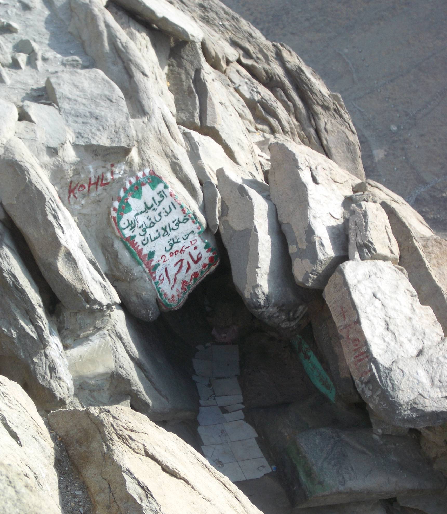
히라 동굴 · 메카 외곽 누르 산(자발 알 누르)의 좁은 바위 틈 · 무함마드가 해마다 칩거하며 명상한 자리, 오늘날 순례자들이 찾는다 [Wikimedia · Public Domain]
IV
AD 610년 라마단 · 메카 히라 동굴
히라 동굴의 한 명령, 읽으라
강의 듣기
메카 동쪽의 한 산 동굴에서 한 사내가 명상하고 있었다. 그날 밤 한 존재가 그를 안았다. 두 번, 세 번. 그러더니 한 가지 명령이 내려왔다. 읽으라.
서기 610년 라마단 달의 어느 밤, 무함마드는 마흔이었다. 그는 해마다처럼 메카 외곽 누르 산의 히라 동굴에 식량을 들고 들어가 홀로 명상하고 있었다. 동굴은 한 사람이 겨우 들어앉을 만큼 좁고, 입구는 메카와 카바를 멀리 내려다본다. 그날 밤, 그는 갑작스럽고 압도적인 한 존재의 임재를 느꼈다. 그 존재가 그를 끌어안아 숨이 막힐 만큼 조였다가 풀어 주고는 한 가지 명령을 내렸다. "읽으라." 아랍어로 이끄라. 무함마드가 떨며 답했다. "저는 읽을 줄 모릅니다." 그는 글을 배운 적 없는 사람이었다. 그러나 그 존재는 다시 그를 끌어안았고, 같은 일이 세 번 반복된 끝에 마침내 한 구절을 그의 입에 새겼다.
읽으라, 만물을 창조하신 주의 이름으로. 그분은 사람을 한 핏덩이로 창조하셨다. 읽으라, 너의 주는 가장 너그러우신 분, 펜으로 가르치셨고, 사람에게 알지 못하던 것을 가르치셨다.
꾸란 96장 알라크, 1-5절
그 첫 다섯 절이 꾸란의 첫 계시였다. 그 존재가 후일 천사 지브릴 즉 가브리엘이었다고 무함마드는 알게 된다. 그가 동굴에서 떨면서 내려왔다. 추위와 두려움에 자기 옷을 머리 위까지 덮었다. 집에 도착해 카디자에게 외쳤다. "나를 덮어라, 나를 덮어라." 그가 자기에게 일어난 일을 떨면서 들려주었다.
카디자는 그를 위로한 뒤 곧장 자기 사촌 와라카 이븐 나우팔에게 그를 데려갔다. 와라카는 메카의 몇 안 되는 기독교인으로, 히브리어와 시리아어를 익혀 구약과 신약의 단편을 읽던 노인이었다. 무함마드의 이야기를 듣고 그가 답했다. "이것은 신이 무사에게 보냈던 바로 그 영(나무스)이다. 너는 이 백성의 예언자가 된 것이다. 부디 내가 그날까지 살아 있어, 너의 부족이 너를 쫓아낼 때 너를 돕게 되기를." 무함마드가 놀라 물었다. "그들이 정말 나를 쫓아냅니까?" 와라카가 답했다. "그렇다. 너와 같은 것을 가져온 사람치고 적을 만들지 않은 이가 없었다." 그러나 와라카는 그 후 얼마 지나지 않아 죽었다. 한 새 예언자의 첫 인정이 한 기독교 노인의 입에서 나왔다는 사실은 깊은 울림을 준다. 후일 이슬람과 기독교는 갈라서지만, 그 출발의 한 자리에는 두 일신교를 잇는 작은 다리가 놓여 있었다.
와라카의 반응은 한 가지 중요한 사실을 일러 준다. 무함마드가 받은 계시가 그 시대 아라비아에 이미 알려져 있던 유대교·기독교의 예언 전통과 같은 흐름 안에 놓여 있었다는 것이다. 무함마드 자신도 그렇게 이해했다. 그는 자기가 전혀 새로운 종교를 만든다고 여기지 않았다. 오히려 아담에서 노아, 아브라함, 모세, 예수로 이어진 한 예언자 계보의 마지막에 자기가 선다고 보았다. 같은 한 신이 같은 진리를 거듭 보냈으나 사람들이 그것을 변질시켰기에, 마지막으로 자기를 통해 그 본래의 메시지를 온전히 회복한다는 것이다. 그래서 꾸란에는 아담, 노아, 아브라함, 모세, 예수의 이야기가 거듭 등장하며, 무슬림은 이들을 모두 예언자로 존경한다. 이슬람이 유대교·기독교와 깊이 얽히면서도 끝내 갈라선 지점이 바로 여기, 누가 마지막 예언자인가라는 물음에 있었다.
그 후 약 이십삼 년에 걸쳐 꾸란의 나머지 모든 구절이 차례로 무함마드에게 내려온다. 한 번에 한 권의 책으로 받은 것이 아니라, 그가 사는 동안 상황에 따라 한 절씩, 한 장(수라)씩 받았다는 것이 무슬림의 믿음이다. 메카에서 받은 초기 구절들은 짧고 운율이 강하며 종말과 심판, 신의 자비를 노래한다. 메디나에서 받은 후기 구절들은 길고 산문적이며 공동체의 법과 규범을 다룬다. 무함마드는 받은 구절을 즉시 입으로 외워 제자들에게 전했고, 제자들이 다시 외우고 일부는 가죽·뼈·야자잎에 적었다. 본격적으로 한 권의 책으로 묶인 것은 그의 사후다. 셋째 칼리프 우스만 때(약 650년) 여러 사본의 차이를 없애고자 표준 판본이 확정되었고, 그 판본이 오늘까지 이어진다.
그것(꾸란)은 만유의 주께서 내리신 계시라. 믿음의 영(지브릴)이 그것을 가지고 그대의 마음에 내려왔으니, 그대가 경고하는 자가 되게 하기 위함이며, 명백한 아랍어로 내렸노라.
꾸란 26장 시인들(앗 슈아라), 192-195절
이 첫 계시가 던진 첫 단어가 읽으라였다는 사실은 두고두고 곱씹을 만하다. 글을 모르는 한 사람에게 내려진 첫 명령이 읽으라는 것이었고, 그 종교의 첫 경전 이름 꾸란 자체가 낭송, 읽힘이라는 뜻이다. 이슬람은 처음부터 말과 글의 종교였다. 무슬림은 꾸란을 단순한 책이 아니라 신의 말씀 그 자체로 여기며, 그래서 번역본은 어디까지나 의미의 풀이일 뿐 진짜 꾸란은 아랍어 원문뿐이라고 본다. 운율과 음가가 곧 신성의 일부이기 때문이다. 한 구절을 처음부터 끝까지 다 외운 사람을 하피즈라 부르며 특별히 존중하는 전통도 여기서 나왔다. 오늘날에도 전 세계에서 수백만 명이 십만 단어가 넘는 이 책 전체를 통째로 암송한다.
첫 계시 직후, 무함마드는 한동안 두려움과 의심에 시달렸다 전한다. 계시가 한참 끊긴 시기(파트라)가 있었고, 그는 자기가 버림받았거나 환각을 본 것이 아닌가 괴로워했다. 그 침묵을 깨고 내려온 구절이 꾸란 93장 아침의 빛(앗 두하)이다. 너의 주께서 너를 버리지도, 미워하지도 않으셨다. 그분이 너를 고아로 보고 거두지 않으셨더냐. 길 잃은 너를 보고 인도하지 않으셨더냐. 가난한 너를 보고 채워 주지 않으셨더냐. 자기 유년의 상실을 정면으로 가리키는 이 구절이, 가장 흔들리던 순간의 그를 다시 일으켰다. 한 사람의 가장 깊은 상처가 그대로 가장 깊은 위로의 언어가 된 셈이다.
곁가지 — 신분을 넘은 첫 신도들
이슬람의 첫 신도들이 누구였는가는 이 종교의 성격을 압축해 보여준다. 첫째 신도는 아내 카디자였다. 두 번째는 그가 직접 키운 사촌, 큰아버지 아부 탈리브의 아들 알리 이븐 아비 탈리브로 당시 열 살 안팎의 소년이었다. 세 번째는 부유한 상인이자 평생의 벗이 될 아부 바크르, 네 번째는 무함마드가 노예의 신분에서 풀어 양아들로 삼은 자이드 이븐 하리타였다. 아내, 어린 친족, 부유한 자유인, 해방 노예. 한 가르침의 첫 네 신도가 성별과 나이와 신분의 모든 층위에서 한 명씩 모였다. 카바의 삼백육십 우상이 부족과 혈통을 갈라 세우던 도시에서, 한 신 앞의 평등이라는 메시지가 가장 먼저 경계를 넘은 사람들을 끌어모은 것이다.
[Ibn Hishām, Sīra · al-Ṭabarī, Taʾrīkh]
비잔티움
같은 해 무렵 콘스탄티노폴리스에서는 헤라클리우스가 폭군 포카스를 무너뜨리고 제위에 올랐다(610년). 그는 곧 사산 페르시아와의 사투에 빠져든다. 한쪽에서 한 황제가 칼로 제국을 구하려 할 때, 다른 한쪽 동굴에서는 한 사내가 말씀으로 한 세계를 열고 있었다.
중국·일본
중국에서는 수(隋)가 막 무너지고 당(唐)이 일어서던 격변기다(618년 당 건국). 일본에서는 쇼토쿠 태자가 불교를 장려하며 17조 헌법을 반포한 직후였다.
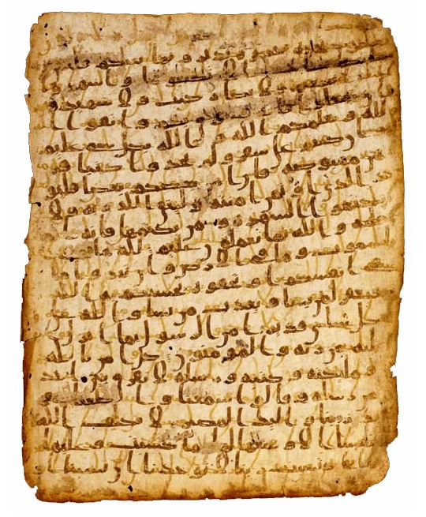
초기 꾸란 사본 · 히자즈체 양피지 단편 · 모음 부호 없이 자음 골격만으로 적힌 가장 이른 시기의 필사 [Wikimedia · Public Domain]
V
AD 613-619 · 메카
메카의 박해와 슬픔의 해
강의 듣기
처음 삼 년은 비밀이었다. 그 다음 십 년이 공개와 박해의 시기였다. 그 마지막 해에 그가 가장 가까운 두 사람을 한 해에 잃었다.
첫 계시 후 약 삼 년 동안 무함마드의 가르침은 가족과 가까운 벗들 사이에서만 조용히 퍼졌다. 그러다 서기 613년경, 그는 공개적으로 선포하라는 명령을 받는다. 메카의 사파 언덕에 올라 그가 큰 소리로 부족 사람들을 불러 모았다. 처음에 사람들은 그의 정직한 평판을 알기에 귀를 기울였다. 그러나 그가 외친 것은 단 하나였다. 오직 한 신만이 신이며, 카바의 모든 우상은 거짓이다. 군중이 충격에 빠졌다. 카바의 삼백육십 우상은 메카의 종교일 뿐 아니라 경제의 기반이었다. 해마다 순례자들이 그 신상들에 절하러 와서 메카에 돈을 떨어뜨렸다. 한 신만을 선포하는 자는 곧 그 모든 우상의 권위와, 그 권위로 먹고사는 도시의 뿌리를 통째로 부정하는 자였다.
박해가 시작되었다. 무함마드 자신은 큰아버지 아부 탈리브가 속한 하심 가의 보호 아래 직접적인 폭력은 면했다. 부족의 명예가 걸린 일이라 함부로 그를 해칠 수 없었던 것이다. 그러나 보호해 줄 부족이 없는 가난한 신도와 노예들은 무방비로 노출되었다. 그들은 채찍에 맞고, 뜨거운 모래에 묻히고, 한낮의 햇볕 아래 무거운 돌에 깔렸다. 가장 유명한 사례가 에티오피아 출신 흑인 노예 빌랄이다. 그의 주인 우마이야가 그를 사막에 눕히고 가슴 위에 큰 바위를 올린 뒤 신앙을 버리라 강요했다. 그러나 빌랄은 숨이 끊어질 듯한 가운데서도 한 마디만 되풀이했다. 아하드, 아하드. 한 분이다, 한 분이다. 아부 바크르가 큰돈을 주고 그를 사서 풀어 주었다. 후일 빌랄은 이슬람 최초의 무앗진, 곧 예배 시각을 알리는 부름(아잔)을 외치는 사람이 된다. 한때 돌에 깔려 신음하던 노예의 목소리가, 메카가 정복된 날 카바 지붕 위에서 신의 위대함을 선포하게 된 것이다.
박해는 개인을 넘어 씨족 전체로 번졌다. 메카의 지도부는 무함마드가 속한 하심 가 전체를 상대로 약 삼 년에 걸친 보이콧을 선포했다. 하심 가와는 사고팔지도, 혼인하지도, 말을 섞지도 말라는 것이었다. 그 협약문을 카바 벽에 붙여 두기까지 했다. 하심 가 사람들은 메카 외곽의 좁은 골짜기에 몰려 굶주렸고, 아이들의 울음소리가 골짜기 밖까지 들렸다 전한다. 결국 몇몇 양심적인 메카 시민이 부당함을 느껴 협약문을 떼어 냈고, 그 문서를 흰개미가 갉아먹어 신의 이름 부분만 남았더라는 이야기가 전한다. 한 공동체를 통째로 말려 죽이려 한 이 집단 제재는 실패했지만, 그 후유증으로 큰아버지와 아내의 건강이 상했고 곧 슬픔의 해로 이어진다.
박해가 견디기 어려워지자 무함마드는 일부 신도를 홍해 건너 아비시니아(오늘의 에티오피아)로 피신시켰다. 그곳은 기독교 왕국이었고, 그 왕 네구스(나자시)는 공정하기로 이름났다. 메카의 쿠레이쉬가 망명자를 돌려받으려 선물을 들려 사절을 보냈다. 왕 앞에서 한 무슬림 자파르 이븐 아비 탈리브가 자기들의 믿음을 변호하며 꾸란의 마리아 수라(19장) 일부를 낭송했다. 예수와 그 어머니 마리아를 기리는 구절이었다. 기독교 왕은 그 구절을 듣고 눈물을 흘리며 말했다 한다. 이것과 예수가 가져온 것은 한 등불에서 나온 빛이다. 그는 사절의 선물을 돌려보내고 망명자를 보호했다. 한 새 종교가 처음으로 국경 밖에서 받은 비호가, 다른 일신교와의 가까움 위에서 이루어진 것이다.
박해의 시기에 내려온 꾸란 구절들은 후기의 법률적 구절과 사뭇 다르다. 짧고 강렬한 운율로 종말과 부활, 심판의 저울, 천국과 지옥을 노래하며, 무엇보다 약자에 대한 책임을 거듭 외친다. 고아를 박대하지 말라, 거지를 내쫓지 말라.재산을 쌓아 두고 세는 자에게 화 있으라. 이 초기 메카 구절들은 사실상 한 사회의 불평등에 대한 격렬한 항의였다. 메카의 부유한 상인 귀족들이 무함마드를 그토록 미워한 데에는 종교적 이유만이 아니라, 그가 부와 신분의 질서 자체를 뒤흔든다는 두려움도 있었다. 한 신 앞의 평등이라는 메시지는 곧 카바의 우상으로 먹고사는 기득권에 대한 정면 도전이었던 것이다.
그러나 서기 619년이 가장 어두운 해로 닥쳐왔다. 그 한 해에 무함마드는 그를 떠받치던 두 기둥을 모두 잃었다. 평생 그를 보호한 큰아버지 아부 탈리브와, 평생 그를 후원하고 가장 먼저 믿어 준 아내 카디자가 잇따라 세상을 떠났다. 후세 이슬람은 이 해를 슬픔의 해(아암 알 후즌)라 부른다. 큰아버지의 죽음으로 부족의 보호막이 사라지자 박해는 한층 거세졌다. 절망 속에서 그는 메카 남동쪽 산악 도시 타이프로 가 새 후원을 구했으나, 그곳 사람들은 그에게 돌을 던져 쫓아냈다. 발에서 피가 흐를 만큼 처참한 거절이었다. 한 예언자의 길이 가장 낮은 바닥에 닿은 순간이었다. 바로 이 막다른 시기에, 북쪽 도시 야트리브에서 한 줄기 다른 손길이 뻗어 온다.
메카 박해기의 무슬림
공개 선교 시작약 613년, 사파 언덕
1차 아비시니아 망명약 615년, 신도 십수 명
씨족 보이콧하심 가에 대한 약 3년간 통상·통혼 금지
슬픔의 해619년, 아부 탈리브·카디자 사망
타이프 거절619년경, 돌팔매로 쫓겨남
곁가지 — 야간 여행과 승천(이스라와 미라즈)
슬픔의 해 직후, 가장 절망적인 시기에 일어났다고 전해지는 한 사건이 있다. 어느 밤 무함마드가 천사 지브릴의 인도로 메카에서 예루살렘까지 순식간에 옮겨졌고(이스라), 거기서 다시 일곱 하늘로 올라가(미라즈) 앞선 예언자들과 신을 만났다는 것이다. 이 야간 여행에서 하루 다섯 번의 예배(살라)가 정해졌다고 무슬림은 믿는다. 꾸란 17장이 그 여행의 첫머리를 짧게 가리킨다. 예루살렘의 먼 사원(알 아크사)이 이슬람의 세 번째 성지가 된 근거가 여기에 있다. 역사학자들은 이 사건을 영적 환상으로 보기도 하고 상징적 서사로 보기도 하지만, 종교적으로는 가장 큰 시련의 한가운데에서 한 사람에게 주어진 가장 큰 위로의 장면으로 읽힌다.
[꾸란 17:1 · Ibn Hishām, Sīra · Ṣaḥīḥ al-Bukhārī]
비잔티움·페르시아
서기 614년에 사산 페르시아가 예루살렘을 점령했다. 성묘 교회가 불타고, 기독교 최고의 성물인 참 십자가의 한 조각이 페르시아 수도로 끌려갔다. 비잔티움 황제 헤라클리우스가 깊은 충격에 빠졌다. 흥미롭게도 꾸란 30장 로마인의 수라(앗 룸)가 이 패배를 언급하며, 로마인(비잔티움)이 머지않아 다시 이길 것이라 예언한다. 실제로 약 십여 년 뒤 헤라클리우스가 대반격에 나서 페르시아를 무너뜨리고 예루살렘과 참 십자가를 되찾는다.
인도·중국
북인도에서는 하르샤 왕이 광대한 제국을 다스리며 불교를 후원했고, 곧 중국 당나라의 현장 법사가 그 땅을 순례한다. 중국에서는 당 태종 이세민의 정관의 치가 막 시작되어 동아시아 최강의 제국이 솟아오르고 있었다.
VI
AD 622년 9월 · 메카에서 메디나로
히즈라 메디나로 가는 밤
강의 듣기
메카 부족들이 그를 죽이기로 결정한 그 밤, 그가 친구 한 명만 데리고 도시를 빠져나갔다. 이 한 밤이 이슬람의 해 한 번째가 된다.
슬픔의 해 이후, 무함마드는 메카 바깥에서 활로를 찾기 시작했다. 마침 야트리브에서 순례 온 아랍인들이 그의 가르침을 받아들였다. 끝없는 부족 보복에 지친 그 도시의 두 부족 아우스와 카즈라즈가, 분쟁을 공정하게 중재할 외부의 권위를 그에게서 본 것이다. 그들은 두 차례에 걸쳐 메카 근교 아카바에서 무함마드에게 충성을 맹세했다(아카바의 서약). 그를 자기 도시로 모시고 보호하겠다는 약속이었다. 이에 무함마드는 신도들을 조용히, 무리 지어 야트리브로 먼저 떠나보냈다.
서기 622년경, 신도 대부분이 빠져나간 것을 안 메카의 부족 회의가 마지막 결정을 내렸다. 무함마드를 죽이기로. 그러나 그는 강성한 하심 가의 사람이라, 한 부족이 단독으로 그를 죽이면 하심 가의 보복 전쟁을 부른다. 그래서 영리한 계략이 짜였다. 각 부족에서 청년을 한 명씩 뽑아, 그들이 동시에 함께 칼을 찌르기로 한 것이다. 피가 모든 부족에 골고루 묻으면, 하심 가도 어느 한 부족만 상대로 보복할 수 없게 된다.
그러나 음모를 미리 안 무함마드는 그날 밤 단 한 사람, 평생의 벗 아부 바크르만 데리고 도시를 빠져나갔다. 떠나기 전 그는 사촌 알리를 자기 침상에 자기 망토 차림으로 눕혀 두었다. 새벽에 자객들이 침상을 덮쳤을 때 거기 누운 이는 알리였다. 그들이 멈칫하는 사이 무함마드는 이미 멀리 사막에 있었다. 알리는 또한 무함마드에게 맡겨진 사람들의 보관물을 본래 주인에게 돌려준 뒤에야 그를 뒤따랐다. 죽이려던 자들의 물건마저 끝까지 돌려준 셈이다.
두 사람은 메카에서 북쪽으로 약 사백 킬로미터 떨어진 오아시스 도시 야트리브로 향했다. 이 도시가 곧 메디나, 곧 마디낫 안 나비(예언자의 도시)로 불리게 된다. 이 한 밤의 이주를 히즈라라 한다. 그리고 바로 이 해가 이슬람력의 원년이 된다. 깊이 새겨둘 점이 있다. 이슬람 달력은 예언자의 탄생도, 첫 계시도, 죽음도 아닌, 한 도시에서 다른 도시로 공동체가 옮겨 간 이 이주의 해를 원년으로 삼는다. 한 종교의 시작점을 한 개인의 생애가 아니라 한 공동체(움마)의 첫 출발에 두는 것이다. 이슬람이 처음부터 신앙이자 동시에 사회였음을 가장 잘 보여주는 선택이다.
히즈라는 단순한 도피가 아니라 한 전략적 결단이었다. 무함마드는 메카에서 십삼 년을 가르쳤지만, 우상 경제에 뿌리내린 그 도시에서 자기 공동체가 더 자랄 수 없음을 분명히 알았다. 반면 야트리브는 내부 분쟁에 지쳐 외부의 중재자를 절실히 원하는, 비어 있는 무대였다. 같은 메시지라도 그것이 뿌리내릴 토양을 찾는 일이 얼마나 중요한지를 그는 알았던 것이다. 한 사상이 실패한 곳에서 그 사상이 틀렸기 때문이라고만 결론짓는 대신, 토양을 바꾸어 다시 심는 이 판단이 이슬람의 운명을 갈랐다. 만약 그가 메카에 머물러 박해 속에 스러졌다면, 우리는 그의 이름조차 알지 못했을 것이다.
가는 길에 두 사람이 사우르 산의 한 동굴에 사흘을 숨었다 전한다. 추격자들이 동굴 입구까지 따라왔다. 그러나 입구에 거미가 거미줄을 치고 비둘기 한 마리가 둥지를 틀어 알을 낳은 것을 보고는, 누가 들어갔다면 이것들이 성할 리 없다 하며 돌아섰다. 작은 거미와 한 마리 새가 한 사람을 살린 셈이다. 꾸란 9장 참회의 수라(앗 타우바) 40절이 이 장면을 짧게 가리킨다. 동굴 속에서 두려워하는 아부 바크르에게 무함마드가 건넨 말이 전한다. 슬퍼하지 말라, 신께서 우리와 함께 계신다. 거미줄의 세부는 후대 전승이라 학자마다 평가가 갈리지만, 이 장면은 무슬림이 가장 사랑하는 위안의 이미지로 남았다.
메디나에서 무함마드의 역할은 메카에서와 전혀 달라졌다. 메카에서 그는 박해받는 한 설교자였으나, 메디나에서는 도시의 분쟁을 조정하고 법을 세우며 군대를 지휘하는 한 공동체의 통치자가 되었다. 한 사람 안에서 예언자와 입법자와 사령관과 재판관이 하나로 겹친 것이다. 이것이 이슬람을 다른 일신교와 구별 짓는 한 특징이 된다. 예수가 가이사의 것은 가이사에게라며 종교와 권력을 나눈 것과 달리, 무함마드는 처음부터 신앙과 통치를 한 손에 쥐었다. 후대 이슬람 정치사상에서 종교와 국가가 좀처럼 분리되지 않은 뿌리가 여기에 있다. 그가 메디나에서 세운 첫 건물도 상징적이다. 궁전이 아니라 흙벽돌과 야자잎으로 지은 소박한 모스크였고, 그 한쪽 방이 곧 그의 집이었다. 예배의 집과 통치의 중심과 사령부가 한 마당 안에 있었다.
메디나에 도착한 무함마드는 곧장 한 가지 역사적인 일을 한다. 도시의 모든 집단과 하나의 협약을 맺은 것이다. 이를 메디나 헌장이라 부른다. 메카에서 온 이주자(무하지룬), 메디나의 토박이 신도(안사르), 그리고 여러 유대 부족과 다신교 집단이 한 도시의 시민으로 함께 살 것을 규정한 문서다. 각 집단은 자기 신앙과 자치를 지키되, 외부의 공격에는 함께 맞서고, 분쟁은 무함마드의 중재에 맡긴다는 내용이었다. 학자들은 이 헌장을 인류사에서 가장 이른 다종교 시민 협약 가운데 하나로 본다. 박해받던 한 종교 지도자가, 권력을 잡자마자 가장 먼저 한 일이 다른 신앙과의 공존을 문서로 못 박은 것이다.
히즈라, 그 의미의 무게
연도서기 622년 = 이슬람력(히즈리력) 1년
이동 거리메카 → 메디나 약 400km
동행아부 바크르 (단 한 사람)
두 집단이주자 무하지룬 · 토박이 안사르
메디나 헌장다종교 시민 공존을 규정한 첫 협약
곁가지 — 형제 맺기, 무하지룬과 안사르
메카에서 온 이주자들은 집도 재산도 없이 맨몸으로 메디나에 닿았다. 무함마드는 이 문제를 한 가지 제도로 풀었다. 이주자 한 사람과 메디나 토박이 한 사람을 짝지어 형제(무아카)로 맺게 한 것이다. 토박이는 자기 집과 재산의 절반을 이주한 형제와 나누었다. 혈연이 전부이던 사회에서, 신앙으로 맺은 형제가 핏줄의 형제와 같은 권리를 갖게 한 이 결정은 부족주의를 넘어서는 새로운 공동체 원리의 실험이었다. 한 안사르가 이주자 형제에게 내 두 아내 가운데 하나와 이혼할 테니 자네가 맞이하라고까지 제안했다는 일화가 전한다. 이주자는 사양하고 시장의 위치만 물어 스스로 장사를 시작했다 한다. 베풂과 자립이 함께 작동한 셈이다.
[Ṣaḥīḥ al-Bukhārī, "Manaqib al-Ansar" · Ibn Hishām, Sīra]
비잔티움·페르시아
두 제국이 마지막 대전쟁을 벌이고 있었다. 한때 페르시아가 시리아, 이집트, 아나톨리아 대부분을 삼켰고, 헤라클리우스는 콘스탄티노폴리스에 갇혀 있었다. 그러나 바로 622년 무렵 헤라클리우스가 대반격에 나선다. 두 제국이 서로의 마지막 힘까지 소진하는 그 순간, 메디나에서는 한 작은 공동체가 첫 헌장을 쓰고 있었다. 누구도 그 작은 도시가 곧 두 제국을 모두 압도하리라고는 상상하지 못했다.
중국
당 고조와 태종의 시대다. 626년 태종이 즉위하며 동아시아 최강의 제국이 전성기로 향한다. 같은 시기 동서의 두 끝에서, 한쪽은 거대한 통일 제국이, 다른 쪽은 한 줌의 신앙 공동체가 각자의 천 년을 열고 있었다.
Tabula II · 히즈라와 메디나의 전장 (622–627)
메카에서 메디나로 — 그리고 바드르·우후드·참호의 세 전투
메디나 세력권 히즈라 행로 전투 히자즈
메디나로 옮긴 공동체는 곧 세 번의 큰 전투를 치른다. 바드르의 승리, 우후드의 패배, 그리고 만 명의 포위를 참호로 막아낸 해. 세 전투가 모두 메디나 반경 수십 킬로미터 안에서 벌어졌다.
VII
AD 624년 3월 · 바드르 우물
바드르 전투 — 작은 군대의 큰 승리
강의 듣기
삼백십삼 명이 천 명을 이겼다. 그 한 번의 승리가 한 새 공동체의 첫 큰 자긍심이 된다.
히즈라 후 약 이 년이 지난 서기 624년 3월. 메카의 큰 카라반이 부유한 상인 아부 수피안의 인솔로 시리아에서 돌아오고 있었다. 무함마드는 이 카라반을 차단하려 군대를 냈다. 메카가 이주자들의 집과 재산을 모두 몰수했으니, 그 일부라도 되찾는다는 명분이었다. 그러나 아부 수피안이 위험을 눈치채고 해안 길로 카라반을 빼돌리는 한편, 메카에 급보를 보내 구원군을 청했다. 메카는 약 천 명의 정예 군대를 보냈다. 무함마드의 손에 남은 것은 무장도 빈약한 약 삼백십삼 명뿐이었다. 카라반은 이미 놓쳤으나, 두 군대는 이제 정면으로 부딪칠 수밖에 없었다.
두 군대가 메디나 남서쪽 바드르의 우물 자리에서 마주쳤다. 사막의 전투에서 물의 통제는 생사를 가른다. 무함마드의 작은 군대가 먼저 우물을 차지하고, 나머지 우물은 메워 적이 쓰지 못하게 했다. 그는 모래가 단단한 곳에 진을 치고, 떠오르는 해를 등져 적의 눈을 부시게 하는 자리를 잡았다. 전투는 그 시대 관습대로 양편 용사들의 일대일 결투로 시작해 전면전으로 번졌다. 갈증과 햇빛에 시달린 메카 군대가 흩어지기 시작했다. 작은 군대가 큰 군대를 이긴 것이다. 메카의 지도층 수십 명이 전사했고, 그 가운데 무함마드를 가장 집요하게 박해하던 숙적 아부 자흘도 있었다. 무슬림 측 전사자는 열네 명에 그쳤다.
너희가 그들을 죽인 것이 아니라 신께서 그들을 죽이셨고, 네가 던졌을 때 던진 것은 네가 아니라 신께서 던지신 것이라.
꾸란 8장 전리품(알 안팔), 17절
이 한 번의 승리가 두 가지 큰 결과를 낳았다. 첫째는 신학적 결과다. 절대 열세의 군대가 이김으로써, 신의 도움이 자기들과 함께한다는 확신이 공동체 전체에 박혔다. 꾸란 8장 전리품의 수라(알 안팔)가 이 승리를 신의 개입으로 해석한다. 둘째는 정치적 결과다. 아라비아의 부족들이 비로소 메디나를 하나의 진지한 정치·군사 세력으로 보기 시작했다. 무함마드는 더 이상 메카에서 쫓겨난 박해받는 설교자가 아니라, 한 도시국가를 이끌고 강자 메카를 꺾은 지도자로 등장한 것이다.
바드르의 승패가 가른 것은 단지 한 번의 전투가 아니었다. 만약 무함마드가 여기서 패했다면 메디나의 어린 공동체는 그대로 무너졌을 것이고, 이슬람이라는 종교는 시작되자마자 사라진 한 지역 운동으로 끝났을 것이다. 그래서 무슬림은 바드르를 판가름의 날(야움 알 푸르칸), 곧 진리와 거짓이 갈린 날이라 부른다. 한 작은 전투가 한 종교의 존속 여부를 결정한 셈이다.
전투 후 약 칠십 명의 포로가 잡혔다. 그들의 처리를 두고 무함마드는 흥미로운 결정을 내린다. 부유한 자는 몸값을 받고 풀어 주고, 돈이 없는 자는 메디나의 무슬림 아이 열 명에게 글을 가르치면 그 대가로 풀어 주라는 것이었다. 그리하여 메카의 다신교도 포로들이 메디나 아이들의 첫 글 선생이 되었다. 읽으라는 첫 계시로 시작한 종교답게, 적의 손이 새 공동체의 첫 글눈을 열어 준 셈이다. 그러나 모든 포로가 자비를 입은 것은 아니었다. 박해의 주동자 두엇은 처형되었다. 승리의 자비와 전쟁의 냉혹이 한 사건 안에 함께 있었다.
곁가지 — 천사들이 함께 싸웠다는 전승
꾸란 3장 이므란 가의 수라(알 이므란)에 한 구절이 있다. 그날 신께서 천 명의 천사를 차례로 보내 너희를 도우셨다. 무슬림 전승은 바드르에서 천사들이 무슬림과 함께 싸웠다고 전한다. 사실 여부와 무관하게, 이 해석은 한 작은 군대의 큰 승리를 그들이 어떻게 받아들였는지를 보여준다. 자기 힘이 아니라 더 큰 힘이 함께한 결과로 본 마음가짐은, 승자를 자만에서 지키는 한 가지 장치이기도 했다. 실제로 무함마드는 바드르 직후 부하들에게 더 큰 싸움을 예고했다 전한다. 우리는 작은 지하드(외적과의 싸움)에서 큰 지하드(자기 자신과의 싸움)로 돌아왔다. 이 말의 진위는 논쟁적이지만, 승리의 순간에 자기 내면을 돌아보라는 그 정신은 후대 수피 전통의 핵심이 된다.
바로 이 무렵 헤라클리우스가 페르시아 심장부로 진격해 627년 니네베 전투에서 결정적으로 승리한다. 두 제국이 서로를 거의 파괴한 직후, 아라비아에서 한 새 군대가 단련되고 있었다. 한 세대도 지나지 않아 이 두 탈진한 제국의 변경이 아랍 군대 앞에 무너진다.
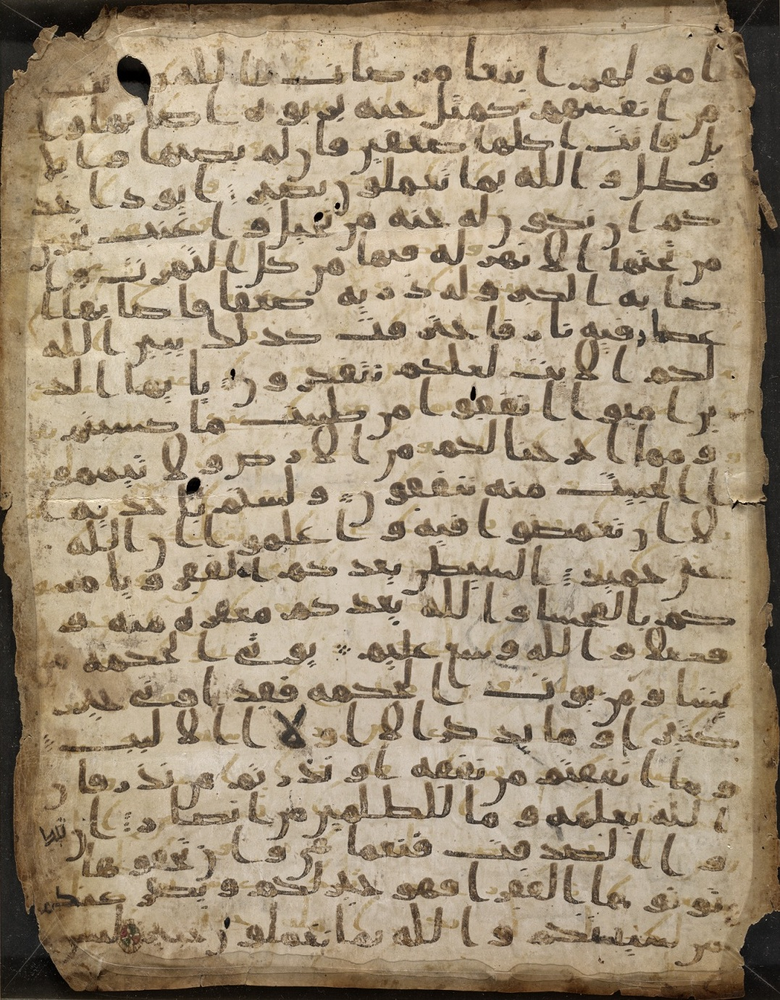
사나 꾸란(팰림프세스트) · 예멘 사나에서 발견된 가장 이른 시기의 양피지 꾸란 단편 가운데 하나 · 초기 본문 전승 연구의 핵심 자료 [Wikimedia · Public Domain]
VIII
AD 625-627 · 메디나
우후드의 패배와 참호 전투
강의 듣기
한 번의 큰 승리 다음에 한 번의 큰 패배가 왔다. 그러나 그 패배가 결국 한 공동체를 더 단단하게 만든다.
바드르의 한 해 뒤인 서기 625년, 메카가 복수를 위해 약 삼천 명의 군대를 일으켜 메디나 북쪽의 우후드 산자락까지 올라왔다. 무함마드는 약 칠백 명으로 그들을 맞았다. 그는 우후드 산을 등지고 진을 쳐 배후를 막고, 측면의 한 고갯길에 약 오십 명의 궁수를 배치했다. 그들에게 거듭 명령했다. 무슨 일이 있어도, 우리가 이기든 지든, 이 자리를 떠나지 마라. 그 고갯길이 뚫리면 적 기병이 아군의 등을 칠 수 있었다.
처음에는 무슬림이 우세했다. 메카 군대의 진열이 무너지고 후퇴가 시작되었다. 그 순간 고갯길의 궁수 다수가 이겼다, 전리품을 놓치지 말자며 약속을 어기고 자리를 떠나 평지로 내려갔다. 비워진 그 자리를, 그때까지 메카 측 기병을 이끌던 명장 칼리드 이븐 알 왈리드가 정확히 노렸다. 그는 비탈을 돌아 무슬림의 등 뒤로 기병을 몰아쳤다. 한순간에 전세가 뒤집혔다. 약 칠십 명의 무슬림이 전사했고, 무함마드 자신도 투구가 깨져 이가 부러지고 뺨이 찢어졌다. 그가 죽었다는 소문이 진영과 도시에 퍼져 한때 큰 혼란이 일었다. 흥미롭게도 이 패배의 명장 칼리드는 몇 해 뒤 이슬람으로 개종해, 무함마드 사후 비잔티움과 페르시아를 무너뜨리는 이슬람 최고의 장군 신의 칼이 된다.
우후드의 패배는 신학적으로도 큰 시험이었다. 바드르의 승리를 신의 도우심으로 해석했던 공동체가, 이제 패배를 어떻게 받아들여야 하는가라는 물음 앞에 섰다. 신이 함께한다면 왜 졌는가. 꾸란은 이 물음에 정면으로 답한다. 승리도 패배도 신의 시험이며, 패배는 진실한 신앙과 거짓 신앙을 가려내는 체와 같다는 것이다. 또한 패배의 책임을 신이 아니라 약속을 어긴 인간 자신에게 돌린다. 그 일은 너희 자신에게서 비롯한 것이라. 승리를 신의 은총으로, 패배를 인간의 잘못으로 보는 이 균형이, 한 공동체가 거듭된 위기 속에서도 신앙을 잃지 않게 한 한 가지 사고의 틀이 되었다.
이 큰 패배 뒤에 무함마드가 보인 태도가 인상적이다. 그는 군대를 책망하거나 약속을 어긴 궁수들을 처벌하지 않았다. 대신 패배를 신이 내린 시험으로 받아들였다. 꾸란 3장이 우후드의 패배를 길게 다루며, 승리도 패배도 신의 손 안에 있으며 패배는 믿음을 가려내는 시련이라 설명한다. 한 지도자가 패배 직후에 보이는 자세가 그 공동체의 다음을 결정한다. 그는 다음 날 곧바로 부상병을 추슬러 퇴각하는 메카 군을 추격하는 시늉을 함으로써, 패했어도 무너지지 않았음을 적과 아군 모두에게 보였다.
그날 너희에게 닥친 일은 신의 허락으로 일어난 것이니, 믿는 자들을 가려내기 위함이라. … 상처가 너희에게 닿았다면, 그와 같은 상처가 저들에게도 닿았노라.
꾸란 3장 이므란 가, 166·140절
이 년 뒤인 서기 627년, 메카가 여러 부족과 유대 동맹까지 끌어들여 약 만 명의 대군으로 메디나를 직접 포위하러 왔다. 도시가 통째로 멸망할 수 있는 최대의 위기였다. 이때 무함마드는 한 페르시아 출신 개종자 살만 알 파리시의 제안을 받아들였다. 도시로 들어오는 트인 북쪽 평지에 깊은 참호를 파라는 것이었다. 페르시아에서는 흔했으나 아라비아인은 한 번도 써 본 적 없는 전술이었다. 무함마드 자신도 흙을 나르며 약 보름에서 한 달에 걸쳐 참호를 팠다. 메카 연합군이 도착했을 때, 그들의 자랑인 기병은 그 참호 앞에서 멈춰 섰다. 사막 전쟁에 익숙한 그들에게 참호는 낯설고 굴욕적인 장벽이었다. 포위가 길어지며 연합군 내부가 분열하고, 마침 매서운 겨울 폭풍이 그들의 천막과 솥을 날려 버리자 그들은 끝내 물러갔다. 한 외래의 전술과 한 자연의 변덕이 도시를 살린 것이다. 이 참호 전투(가즈와 알 칸다크)를 끝으로, 메카는 두 번 다시 메디나를 공격하지 못한다. 공수의 균형이 영영 뒤집힌 것이다.
메디나 3대 전투
바드르 (624)무슬림 313 vs 메카 1,000 · 승리
우후드 (625)무슬림 700 vs 메카 3,000 · 패배
참호 (627)무슬림 3,000 vs 연합 10,000 · 방어 성공
전환점참호 이후 메카의 공세 종결
곁가지 — 유대 부족 바누 쿠라이자의 비극
참호 전투 동안 메디나 안의 한 유대 부족 바누 쿠라이자가 메디나 헌장의 한 가지 조항을 어기고 메카 연합군과 비밀히 연락했다. 포위 후 무함마드가 그 부족을 정복했다. 부족의 모든 성인 남자 약 육백 명에서 구백 명이 처형되었다 전한다. 여자와 아이는 노예가 되었다. 이 사건이 후일 이슬람사의 가장 어두운 한 페이지로 남는다. 학자들 사이에 그 처형 결정의 정당성과 정확한 숫자에 대해 큰 논쟁이 있다. 한 가지 분명한 것은 그 시대 아라비아 부족 전쟁의 한 가지 잔혹한 관습 안에서 일어난 사건이라는 점이다. 한 종교의 창시자가 자기 시대의 한 가지 잔혹한 관습 안에서 어떤 결정을 내렸는가는, 그 종교가 평생 안고 갈 한 가지 무거운 질문으로 남는다.
[Ibn Isḥāq, Sīra · al-Ṭabarī · Encyclopaedia of Islam, "Banū Qurayẓa" · M. J. Kister 논문]
비잔티움·페르시아
참호 전투와 같은 627년, 헤라클리우스가 니네베에서 페르시아군을 격파해 사산 제국의 등뼈를 꺾었다. 이듬해 호스로 2세가 살해되며 페르시아는 내전과 혼란에 빠진다. 두 제국이 동시에 탈진한 바로 그 순간, 메디나의 공동체는 가장 큰 위기를 넘기고 아라비아의 주도 세력으로 떠올랐다.
중국
당 태종의 정관의 치가 절정으로 향했다. 630년 무렵 당은 동돌궐을 무너뜨려 초원의 패권까지 거머쥔다. 동서의 두 끝에서 두 거대한 질서가 거의 동시에 솟아오르고 있었다.
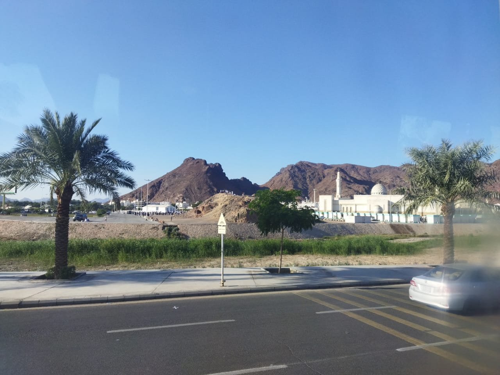
우후드 산 · 메디나 북쪽의 붉은 바위 산 · 625년 무슬림이 값비싼 패배를 겪은 전장 [Wikimedia · Public Domain]
IX
AD 630년 1월 · 메카
메카로 돌아오는 길 — 무혈의 정복
강의 듣기
팔 년 전 그를 죽이려 했던 도시가 한 번도 칼을 들지 않고 그에게 문을 열었다.
참호 전투 이듬해인 628년, 무함마드는 무장하지 않은 순례단을 이끌고 메카로 향했다. 메카는 그들의 입성을 막았고, 양측은 후다이비야 조약을 맺었다. 십 년간 휴전하고, 무슬림은 이듬해에 순례한다는 내용이었다. 표면상 무슬림에게 불리해 보였으나, 이 평화는 메카가 메디나를 대등한 세력으로 공인했음을 뜻했다. 휴전 기간 동안 이슬람은 평화롭게 빠르게 퍼졌다. 그러나 약 이 년 뒤 메카의 동맹 부족이 무슬림 동맹을 습격해 조약이 깨진다. 명분은 이제 무함마드에게 있었다.
서기 630년 1월, 무함마드가 약 만 명의 대군을 이끌고 메카로 행군했다. 메카가 한 번도 본 적 없는 규모였다. 저항은 거의 없었다. 도시가 사실상 무혈로 문을 열었다. 무함마드는 카바로 들어가 그 안과 주변의 삼백육십 우상을 손수, 그리고 부하들과 함께 부수었다. 막대로 한 우상씩 쓰러뜨릴 때마다 그는 꾸란 한 구절을 읊었다. "진리가 왔고 거짓이 사라졌다. 진실로 거짓은 사라지기 마련이다." 도시의 심장이던 신전이 한 신만을 위한 집으로 다시 봉헌되는 순간이었다.
후다이비야 조약은 그 자체로 무함마드의 정치적 안목을 보여 준다. 당시 그를 따르던 이들 중 다수는 무장도 없이 돌아서는 것을 굴욕으로 여겼고, 우마르 같은 강경파는 대놓고 불만을 터뜨렸다. 그러나 무함마드는 당장의 자존심보다 십 년의 평화가 가져올 실리를 택했다. 휴전 기간에 무슬림과 메카인이 자유로이 오가게 되자, 이슬람을 직접 보고 듣고 개종하는 사람이 급증했다. 칼로 못 얻은 것을 평화가 가져온 셈이다. 꾸란은 이 조약을 두고 명백한 승리라 불렀다. 눈앞의 패배처럼 보인 것이 실은 더 큰 승리의 씨앗이었다는 이 역설은, 협상과 인내의 가치를 가르치는 한 사례로 두고두고 인용된다.
그다음에 일어난 일이 메카 정복의 핵심이다. 무함마드는 카바 앞에 서서, 팔 년간 자기를 박해하고 쫓아내고 죽이려 한 메카 사람들에게 물었다. "오늘 내가 너희를 어떻게 하리라 보느냐." 그들이 답했다. "너는 너그러운 형제이며 너그러운 형제의 아들이다." 무함마드가 선언했다. "오늘 너희에게 어떤 책망도 없다. 가라, 너희는 자유다." 일찍이 그를 가장 모질게 핍박한 자들, 그의 삼촌의 시신을 훼손한 여인 힌드, 우후드의 적장들까지 대부분 사면되었다. 처형 명단에 오른 자는 극소수였고, 그중에서도 여럿이 마지막에 용서받았다.
이 사면의 무게는 비교를 통해 분명해진다. 같은 시대 비잔티움이나 페르시아의 도시 정복은 거의 언제나 학살과 약탈로 끝났다. 그러나 메카 정복은 거의 피를 흘리지 않았다. 한 사람의 절제된 결정이 도시 하나의 운명을 통째로 바꾸었고, 정복 후 사면이라는 이 선례는 이후 이슬람 팽창의 한 정치적 모범으로 자리 잡는다. 항복하는 도시를 살려 두고 신앙의 자유와 세금(지즈야)을 맞바꾸는 방식이, 한 세기 만에 대서양에서 인더스까지 이르는 제국을 가능하게 한 한 가지 비결이 된다.
정복 이후 무함마드는 메카에 머물지 않고 메디나로 돌아갔다. 권력의 도시를 손에 넣고도 자기 공동체가 자란 도시로 되돌아간 이 선택은 의미심장하다. 그는 정복자가 아니라 한 공동체의 지도자로 남기를 택했다. 이 무렵 그는 카바를 둘러싼 의례를 우상 숭배의 잔재를 걷어 내고 한 신을 향한 형식으로 다시 빚었다. 옛 아라비아인이 행하던 카바 일곱 바퀴 돌기, 사파와 마르와 두 언덕 사이를 오가기, 아라파트 평원에 서기 같은 동작은 그대로 두되, 그 의미를 한 신에 대한 복종과 아브라함의 신앙을 기리는 것으로 바꾸었다. 옛 형식에 새 뜻을 부어 넣은 것이다. 이렇게 재정의된 핫즈가 오늘까지 해마다 수백만 명을 같은 자리에 모은다.
메카는 이제 우상의 도시에서 일신교의 성지로 다시 태어났다. 카바는 한 신의 집이 되었고, 메카 순례 곧 핫즈는 이슬람의 다섯 기둥 가운데 하나로 정해졌다. 오늘날 해마다 수백만 명이 같은 카바를 향해 같은 동작으로 도는 그 의례의 형식이, 바로 이 정복의 해에 결정되었다. 천사백 년 전 한 고아가 쫓겨났던 도시가, 오늘 지구상 가장 많은 사람이 일생에 한 번 향하기를 소망하는 중심이 된 것이다.
정복 전후의 외교
후다이비야 조약628년, 10년 휴전 · 메디나의 공인
각국에 보낸 서한비잔티움·페르시아·이집트(무카우키스)·아비시니아 등
메카 무혈 입성630년 1월, 약 1만 군대
카바 정화360개 우상 제거, 핫즈 제정
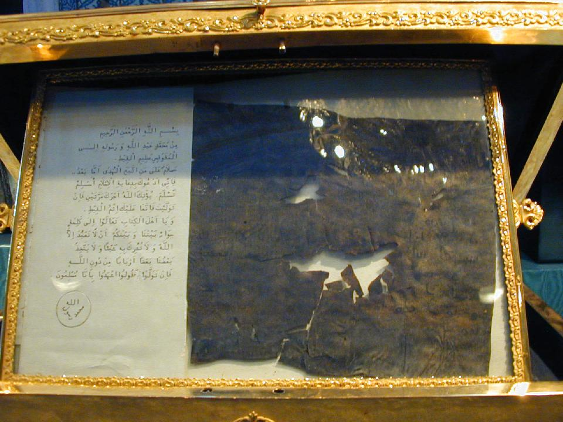
이집트 총독 무카우키스에게 보낸 서한(전승) · 무함마드가 주변 군주들에게 보낸 초청 서한 가운데 하나로 전해지는 양피지 · 톱카프 궁전 박물관 소장 [Wikimedia · Public Domain]
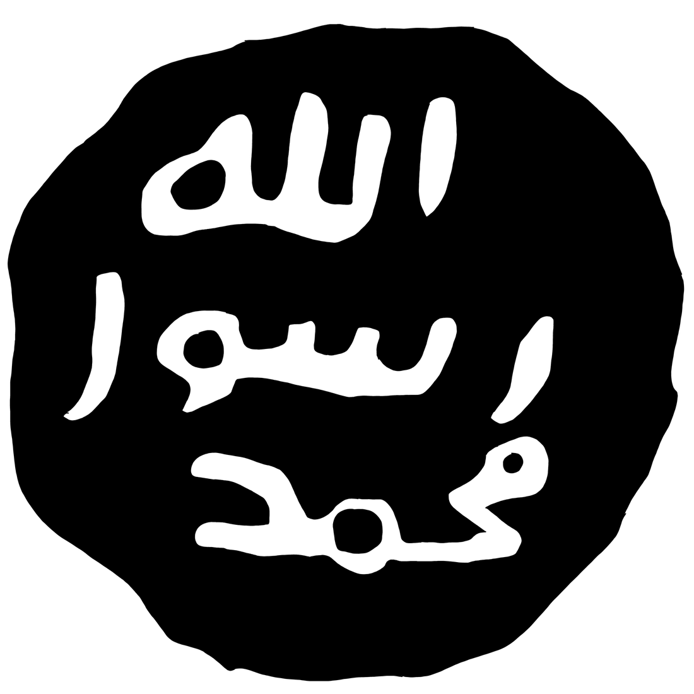
예언자의 인장 · "무함마드 라술 알라(무함마드는 신의 사도)"를 새긴 인장 · 군주들에게 보낸 서한을 봉인하는 데 쓰였다 전한다 · 톱카프 궁전 [Wikimedia · Public Domain]
Tabula III · 메카 정복에서 정통 칼리프의 팽창까지 (628–661)
아라비아 통일, 그리고 두 제국을 삼킨 한 세대
무함마드 생전 통일 아라비아 정통 칼리프 팽창 정복 진로
메카 정복 후 무함마드는 단 이 년 만에 아라비아 반도 대부분을 하나로 묶었다. 그가 죽은 뒤 한 세대도 안 되어, 후계자들이 비잔티움의 시리아·이집트와 사산 페르시아 전역을 삼킨다.
X
AD 632년 봄 · 메카-메디나
고별의 설교와 마지막 병
강의 듣기
정복 후 두 해 뒤 그가 마지막 순례 길에 올랐다. 아라파트 산에서 그가 마지막 설교를 했다. 석 달 뒤 그가 메디나에서 눈을 감았다.
메카 정복 후 무함마드는 단 이 년 만에 아라비아 반도 대부분의 부족을 신앙과 동맹으로 묶었다. 사절단들이 메디나로 줄을 이어 와 충성을 맹세한 이 시기를 사절단의 해라 부른다. 그리고 서기 632년 3월, 그는 메디나에서 약 십만에서 십이만 명에 이르는 무슬림을 이끌고 메카로 향했다. 평생 단 한 번 행한 정식 핫즈였고, 그래서 고별의 순례라 불린다. 순례의 절정에서 그는 메카 동쪽 아라파트 평원의 자비의 산(자발 알 라흐마)에 낙타를 타고 서서, 운집한 군중에게 마지막 설교를 했다. 이 고별의 설교는 그의 가르침의 요약이자 유언처럼 읽힌다. 그 핵심은 다음과 같다.
오 사람들이여, 너희의 주는 한 분이시며 너희의 아버지도 한 분이시다. 너희 모두는 아담의 자손이고, 아담은 흙으로 지어졌다. 아랍인이 비아랍인보다 위에 있지 않고, 흑인이 백인보다 위에 있지 않다. 다만 신을 두려워하는 자가 신께 더 가까이 있다.
고별의 설교, Ibn Hishām, Sīra
설교는 평등의 선언에 그치지 않았다. 무함마드는 자힐리야 시대의 끝없는 피의 보복을 끝내겠다고 선언하며, 자기 친족이 흘린 피값마저 가장 먼저 면제한다고 밝혔다. 고리대금(리바)을 금하면서 자기 삼촌이 받을 이자부터 무효로 했다. 여성에 대해서는 그대들이 아내에게 권리가 있듯 아내도 그대들에게 권리가 있다고 했고, 맡겨진 것을 돌려주고 약속을 지키라 거듭 당부했다. 그리고 자기 가르침의 핵심을 두 가지로 요약했다. 내가 너희에게 두 가지를 남기니, 그것을 굳게 잡으면 결코 길을 잃지 않으리라. 신의 책과 그분 사도의 길이라. 한 인물의 생애 전체가 이 짧은 설교 안에 압축되어, 이후 천사백 년 무슬림의 삶을 규율하는 헌장이 되었다.
오늘 내가 너희를 위해 너희의 종교를 완성하였고, 너희에게 베푼 나의 은총을 다하였으며, 이슬람을 너희의 종교로 삼는 것을 기뻐하노라.
꾸란 5장 식탁(알 마이다), 3절 — 고별 순례 중 내렸다고 전하는 구절
이 한 마디는 후세 이슬람 평등 사상의 뿌리가 된다. 한 신 앞에서 아랍인과 비아랍인, 흑인과 백인이 우열을 가질 수 없다는 선언이다. 실제 역사에서 이슬람 사회가 늘 이 원칙대로 살았던 것은 아니다. 정복지의 비아랍 개종자(마왈리)에 대한 차별이 있었고, 노예제도 오래 존속했다. 그러나 적어도 그 출발의 선언은 이 한 문장 안에 분명히 새겨져 있었고, 후대의 개혁가들은 늘 이 설교로 되돌아왔다. 설교는 또한 이자(고리대)의 금지, 여성에 대한 정당한 대우, 생명과 재산의 불가침, 부족 보복의 종식을 못 박았다.
고별의 순례는 단순한 종교 의례를 넘어선 한 정치적 절정이기도 했다. 약 십만 명이 한자리에 모였다는 것은, 불과 이십여 년 전 메카 한구석에서 가족 몇 명에게 비밀히 가르치던 한 사람이 이제 아라비아 반도 전체를 하나의 신앙과 하나의 질서 아래 묶었음을 뜻한다. 끝없는 부족 보복으로 쪼개져 있던 사막의 부족들이, 한 신과 한 공동체라는 이름 아래 처음으로 하나가 된 것이다. 그가 아라파트에서 외친 오늘 내가 너희의 종교를 완성하였노라는 구절은, 한 개인의 사명이 마무리되었다는 신호이자 동시에 한 새 문명의 출발 선언이기도 했다. 그리고 그 완성의 순간이 곧 그의 마지막이었다.
설교 후 메디나로 돌아온 무함마드는 얼마 지나지 않아 병에 들었다. 심한 두통과 발열로 약 두 주를 앓았다. 그는 마지막 며칠을 아내 아이샤의 집에서 보냈다. 아이샤는 벗 아부 바크르의 딸로, 카디자 사후 그의 가장 가까운 아내였으며 후일 수많은 하디스를 전한 학식 높은 전승자가 된다. 병중에도 그는 노예를 풀어 주고 남은 재산을 나누어 주라 일렀고, 마지막까지 예배를 거르지 않으려 했다. 결국 그는 아이샤의 무릎에 머리를 둔 채 숨을 거두었다. 서기 632년 6월 8일, 그의 나이 예순셋이었다. 한 고아로 태어나 박해받고 쫓겨났던 그는, 죽을 때 아라비아 전체의 영적·정치적 지도자였으나 남긴 재산은 거의 없었다.
그의 죽음 소식이 메디나에 퍼지자 충격이 컸다. 어떤 무슬림은 그가 죽었다는 사실을 받아들이지 못했다. 우마르 이븐 알 카탑이 칼을 들고 외쳤다. 누가 무함마드가 죽었다고 말하는가, 내가 그자의 목을 벨 것이다. 그때 아부 바크르가 군중 앞에 나와 한 마디를 외쳤다.
무함마드를 섬기는 자는 알라. 무함마드는 죽었다. 알라를 섬기는 자는 알라. 알라는 죽지 않으신다.
아부 바크르, Sīra · Bukhari Hadith
그의 죽음은 한 가지 위기를 불렀다. 그가 살아 있는 동안 공동체는 그의 인격과 권위에 기대어 하나로 묶여 있었다. 그 구심점이 사라지자 여러 부족이 메디나에 대한 충성을 거두려 했고, 거짓 예언자를 자처하는 자들이 곳곳에서 일어났다(릿다, 곧 배교의 전쟁). 첫 칼리프 아부 바크르는 단호한 군사 행동으로 이 위기를 진압해 아라비아의 통일을 지켜 냈다. 한 창시자가 떠난 직후가 모든 종교 공동체에 가장 위험한 시기라는 사실을, 이슬람도 피하지 못했던 것이다. 그러나 그 고비를 넘기자, 무함마드가 세운 신앙과 조직은 한 개인의 생애를 넘어 스스로 굴러가는 거대한 운동이 되었다.
이 한 마디는 한 새 종교가 창시자의 죽음을 견디는 방식에 대한 답이었다. 아부 바크르는 사람들의 슬픔을 곧장 신앙의 중심으로 되돌렸다. 무함마드는 사람이며 따라서 죽지만, 그가 가리킨 신은 죽지 않는다는 것이다. 이로써 이슬람은 창시자의 신격화를 단호히 막았다. 무함마드는 신이 아니라 신의 사도(라술)이며, 예배의 대상은 오직 신뿐이라는 원칙이 그의 죽음의 순간에 다시 한 번 확정되었다. 한 종교가 한 인간에게 의존하지 않도록 만든 이 신학적 결단이, 역설적으로 그 종교를 가장 오래 살아남게 했다.
곁가지 — 무덤이 된 방, 예언자의 모스크
무함마드는 그가 숨을 거둔 아이샤의 방, 곧 메디나의 자기 모스크에 잇닿은 그 자리에 묻혔다. 예언자들은 죽은 자리에 묻힌다는 전승에 따른 것이다. 후대에 모스크가 거듭 확장되면서 그 무덤은 건물 안으로 들어왔고, 오늘날 메디나의 예언자의 모스크(알 마스지드 안 나바위) 안 녹색 돔 아래에 그 자리가 있다. 메카의 카바, 예루살렘의 알 아크사와 더불어 이슬람의 세 성지 가운데 하나다. 다만 우상 숭배를 극도로 경계하는 이슬람 전통은 무덤 자체를 숭배 대상으로 삼는 것을 늘 경계해 왔고, 이 긴장은 오늘날까지 이슬람 내부의 한 논쟁으로 남아 있다.
[Ṣaḥīḥ al-Bukhārī · al-Ṭabarī · Encyclopaedia of Islam, "al-Madīna"]
비잔티움·페르시아
무함마드가 죽던 632년, 두 제국은 막 끝난 대전쟁의 폐허 위에 서 있었다. 페르시아는 내전으로 갈가리 찢겼고, 비잔티움은 시리아·이집트의 단성론 기독교도를 억압해 민심을 잃고 있었다. 불과 몇 해 뒤, 무함마드의 후계자들이 보낸 군대 앞에서 두 제국의 변경이 무너진다.
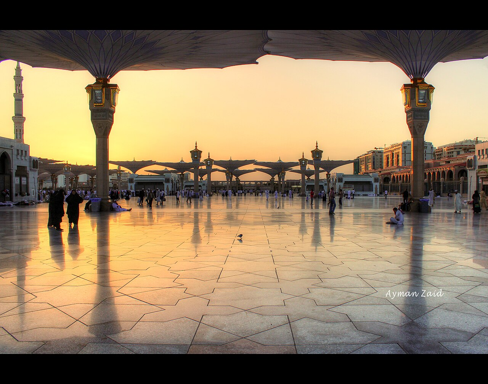
예언자의 모스크(알 마스지드 안 나바위) · 메디나 · 무함마드가 묻힌 자리 위에 세워진, 카바와 알 아크사에 이은 이슬람 제2의 성지 [Wikimedia · Public Domain]
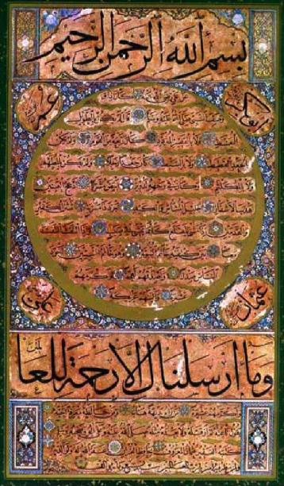
힐예이 셰리프 · 하피즈 오스만(1642-1698) · 예언자의 외모와 성품을 그림 대신 글로 묘사한 오스만 캘리그라피 · 얼굴을 그리지 않는 전통의 한 해법 [Wikimedia · Public Domain]
XI
AD 632 - 661 · 정통 칼리프 시대
칼리프와 수니-시아의 분기
강의 듣기
한 예언자가 떠난 다음 그 자리를 누가 이을 것인가. 그 한 질문이 한 종교를 두 갈래로 갈랐다.
무함마드의 죽음 직후 가장 큰 문제가 떠올랐다. 그가 분명한 후계 절차를 남기지 않고 떠난 것이다. 누가 공동체(움마)를 이끌 것인가. 한 집단은 그의 사촌이자 사위인 알리 이븐 아비 탈리브가 정당한 후계자라 주장했다. 그가 무함마드의 가장 가까운 남자 친족이고, 직접 길러졌으며, 무함마드가 가디르 쿰에서 알리를 가리켜 한 말을 후계 지명으로 보아야 한다는 것이었다.
그러나 다수는 무함마드의 오랜 벗 아부 바크르를 택했다. 그가 메디나의 회의(사키파)에서 첫 칼리프로 추대되었다. 할리파, 곧 (예언자의) 대리·후계자라는 뜻이다. 알리는 한동안 거리를 두었으나 결국 이를 받아들였다. 이후 아부 바크르, 우마르, 우스만, 알리 네 사람이 차례로 칼리프가 되었고, 이들을 후세 수니파는 정통 칼리프(라시둔)라 부른다. 이 약 삼십 년 사이에 이슬람 군대는 시리아·이집트와 사산 페르시아 전역을 정복해, 한 줌의 도시 공동체를 대제국으로 키운다.
내가 누구의 마울라(주군·벗)이든, 알리 또한 그의 마울라이다.
가디르 쿰의 전승 — 시아·수니가 그 해석을 달리하는 구절
그러나 갈등은 깊었다. 셋째 칼리프 우스만이 반란 세력에게 암살되었다. 알리가 넷째 칼리프가 되었으나 그의 치세는 내전으로 얼룩졌고, 그 역시 661년 암살되었다. 알리의 큰아들 하산은 권력을 우마이야 가의 무아위야에게 넘기고 물러났고, 둘째 아들 후세인은 서기 680년 카르발라에서 우마이야 군대에 포위되어 가족과 함께 학살당했다. 물 한 모금 없이 사막에서 죽어 간 후세인의 순교는 시아 신앙의 정서적 핵심이 되었고, 그날을 기리는 아슈라는 오늘날 시아 무슬림이 가슴을 치며 애도하는 가장 큰 기념일이 된다.
이 후계 갈등을 단순한 권력 다툼으로만 보면 핵심을 놓친다. 그 밑바닥에는 한 가지 근본적인 질문이 있었다. 예언자가 떠난 뒤, 신의 뜻을 누가 어떻게 알 수 있는가. 시아의 답은 명확했다. 예언자의 핏줄로 이어지는 이맘만이 신의 인도를 받아 오류 없이 가르칠 수 있다는 것이다. 수니의 답은 달랐다. 특정한 핏줄이 아니라 공동체 전체의 합의(이즈마)와 학자들의 해석이 길을 밝힌다는 것이다. 한쪽은 신성한 혈통에, 다른 한쪽은 공동체의 집단지성에 권위를 두었다. 이 차이는 단지 누가 칼리프가 되느냐를 넘어, 종교적 권위가 어디서 나오는가에 대한 두 개의 세계관이었다. 그래서 두 분파는 천사백 년이 지나도록 좁혀지지 않는다.
이 정치적 분열이 끝내 신학적 분열로 굳었다. 알리와 그 후손(이맘)만이 정당한 지도자라 본 사람들이 시아파(시아트 알리, 알리의 당파)가 되었다. 정통 칼리프 넷과 그 뒤의 역사적 칼리프들을 모두 인정하고, 무함마드의 말·행동의 전통인 순나를 따른다고 자처한 다수가 수니파(아흘 앗 순나)가 되었다. 두 분파는 신학의 큰 틀을 공유하면서도, 권위의 원천을 어디에 두는가에서 갈린다. 수니는 공동체의 합의와 학자에, 시아는 예언자 가문의 이맘에 둔다.
정통 칼리프(라시둔)
아부 바크르632-634 · 아라비아 재통합(릿다 전쟁)
우마르634-644 · 시리아·이집트·페르시아 정복
우스만644-656 · 꾸란 표준 판본 확정 · 암살
알리656-661 · 내전과 암살 · 시아의 첫 이맘
카르발라680 · 후세인 순교 → 아슈라
그러나 분열만이 무함마드의 유산은 아니었다. 그가 죽은 뒤 한 세기가 채 지나기 전에, 이슬람은 서쪽으로 대서양 연안의 모로코와 이베리아 반도까지, 동쪽으로 인더스 강과 중앙아시아까지 뻗었다. 로마가 수백 년에 걸쳐 이룬 것을 아랍 군대는 한 세대 만에 이루었다. 정복은 칼만으로 된 것이 아니었다. 탈진한 비잔티움·페르시아의 가혹한 세금과 종교 박해에 지친 주민들에게, 신앙의 자유와 더 가벼운 세금을 약속한 새 지배자는 때로 해방군처럼 받아들여졌다. 정복지의 학자, 기술, 언어가 아랍어와 이슬람의 틀 안으로 흘러들면서, 곧 바그다드를 중심으로 한 이슬람 황금기가 열린다. 그리스 철학과 인도 수학과 페르시아 행정이 한 언어 안에서 만나, 대수학·광학·의학·천문학이 꽃피었다.
한편 무함마드의 말과 행동을 기록한 하디스가 방대하게 수집·검증되어, 꾸란과 더불어 이슬람법(샤리아)의 두 기둥이 되었다. 누가 그 말을 누구에게서 들었는지 전승의 사슬(이스나드)을 한 단계씩 따져 진위를 가리는 학문이 발달했고, 부카리와 무슬림의 하디스 모음집이 가장 권위 있는 것으로 자리 잡았다. 한 사람의 일상적 언행이 이토록 정밀하게 추적되고 법의 근거가 된 예는 인류사에 드물다. 무함마드가 무엇을 먹었고 어떻게 기도했으며 어떤 농담을 했는지까지, 십팔억 인구의 삶의 세목이 그 기록을 향한다.
오늘날 무슬림 약 십팔억 명 가운데 약 팔할 이상이 수니파, 약 일할에서 일할 반이 시아파다. 시아의 중심은 이란이며, 이라크·바레인·아제르바이잔에 다수가, 레바논·시리아·예멘 등에 상당수가 분포한다. 한 예언자의 사후 후계 문제가 천사백 년을 건너 오늘의 중동 지정학까지 규정하고 있는 셈이다. 한 종교의 가장 깊은 균열이 창시자가 살아 있을 때가 아니라 그가 떠난 바로 그 직후에 그어진다는 사실은, 비단 이슬람만의 이야기가 아니다.
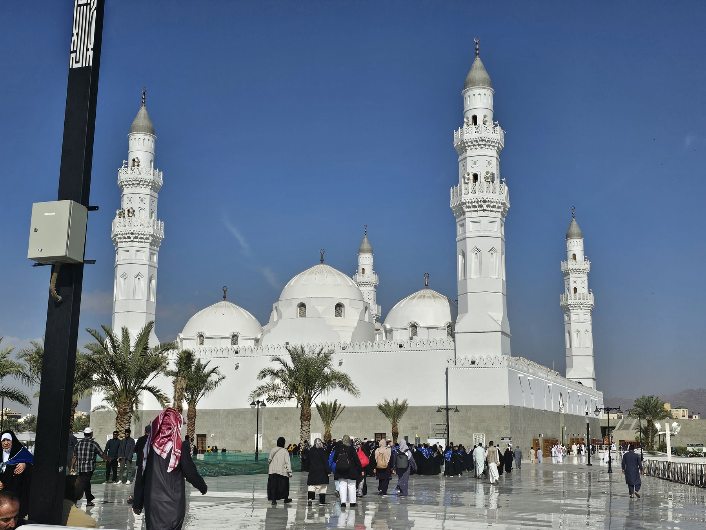
쿠바 모스크 · 메디나 외곽 · 무함마드가 히즈라 직후 손수 세웠다 전하는, 이슬람 최초의 모스크 [Wikimedia · Public Domain]
XII
Alia visione
다른 시선 — 단테에서 칼라일까지
강의 듣기
한 사막의 사내가 한 책을 받았다는 사실을 천사백 년 동안 여러 문명이 매우 다른 시선으로 보았다.
한 인물을 한 문명의 거울로만 비추어서는 그 전모를 볼 수 없다. 무함마드만큼 시대와 문명에 따라 극단적으로 다르게 읽힌 인물도 드물다. 같은 한 사람이 한쪽에서는 마지막 예언자이자 자비의 화신으로, 다른 한쪽에서는 분열을 일으킨 거짓 선지자로, 또 다른 쪽에서는 냉철한 정치 천재로 그려졌다. 그 엇갈린 시선들을 나란히 놓고 보는 것은, 한 인물을 이해하는 일이기도 하지만 동시에 그를 바라본 각 문명의 자화상을 읽는 일이기도 하다.
① 단테의 신곡 — 가장 잔인한 한 페이지
이탈리아 시인 단테가 십사 세기 초에 쓴 신곡의 지옥편 이십팔 곡에 무함마드가 등장한다. 단테는 그를 분열을 만든 자의 자리에 두고 매우 잔인하게 그렸다. 그의 몸이 턱부터 항문까지 갈라진 채로 영원한 형벌을 받는다. 단테가 보기에 무함마드는 한 새 종교를 만들어 기독교 세계를 분열시킨 자였다. 이 한 페이지가 후일 가장 비판받은 단테의 한 부분이 된다. 이천십삼 년 영국 시인 클라이브 제임스가 신곡 새 번역에서 이 한 페이지를 두고 단테가 그 시대 십자군 분위기에 너무 깊이 잠겨 한 다른 종교의 창시자를 정직하게 보지 못했다고 평했다.
② 중세 유럽의 오해 — 마호메트라는 우상
중세 유럽 사람들이 무함마드를 어떻게 이해했는가는 오늘 우리에게 충격적이다. 한 시기에 유럽인들은 무슬림이 우상을 섬긴다고 믿었다. 그들이 마호메트라는 한 신을 섬긴다고 잘못 생각했다. 십자군 시대 노래에 마호메트의 황금상이 등장하기도 한다. 사실은 정반대였다. 무슬림은 유대교, 기독교를 포함한 모든 일신교 가운데 가장 엄격한 우상 금지를 가진 종교다. 한 문명이 다른 문명을 자기가 만든 한 거울에 비추어 본 가장 명확한 한 가지 오해의 예다.
③ 칼라일의 영웅 강연 — 십구 세기 서구의 첫 정직한 평가
일천팔백사십 년 영국 사상가 토머스 칼라일이 영웅과 영웅 숭배라는 한 강연 시리즈에서 무함마드를 한 영웅 가운데 한 자리에 두었다. 그가 한 마디를 한다. 그를 거짓말쟁이라 부르는 것은 어떻게 한 사람의 거짓말이 천이백 년을 살아남고 일억 명의 마음을 사로잡을 수 있는지를 설명하지 못한다. 한 사람의 가르침의 지속력 자체가 그 사람의 정직의 한 가지 증거라는 것이다. 칼라일의 이 한 강연이 서구가 무함마드를 처음으로 진지하게 다른 종교 창시자와 같은 자리에 둔 한 가지 결정적 순간이었다.
④ 이슬람 미술 — 한 얼굴 없는 예언자
한 가지 흥미로운 사실. 이슬람은 예언자의 얼굴을 그리는 일을 금한다. 우상 숭배의 위험 때문이다. 그러므로 우리는 무함마드의 얼굴을 그린 어떤 정통 이슬람 도상도 갖지 못한다. 페르시아와 터키의 일부 시아 전통에서 그의 얼굴을 그린 작은 그림이 있지만, 가장 흔한 도상은 그의 얼굴이 흰 천으로 가려진 채 몸만 그려지는 모습이다. 한 종교의 창시자의 얼굴을 모르는 한 가지 신학적 결정이 그 종교 안의 모든 미술의 방향을 결정했다. 사람을 그리지 않는 그 자리에 글씨의 미학 즉 한 가지 캘리그래피의 큰 전통이 자랐다. 아랍어 글씨가 한 가지 큰 미술이 된 이유가 거기 있다.
⑤ 알렉산드로스와의 한 가지 만남 — 꾸란의 둘 카르나인
꾸란 18장의 한 부분에 두 뿔의 자가 등장한다. 아랍어로 둘 카르나인. 학자들은 그가 알렉산드로스 대왕이라 본다. 한 가지 흥미로운 만남이다. 한 그리스 정복자가 한 천 년을 건너 한 새 종교의 한 가지 거룩한 인물로 다시 등장한 것이다. 그 알렉산드로스는 더 이상 정복자가 아니라 한 신의 종이고, 세계의 끝까지 가서 종말의 게이트를 쌓는 한 거룩한 여행자이다. 한 문명이 다른 한 문명의 인물을 자기 신화 안으로 끌어들이는 한 가지 패턴이다.
⑥ 현대의 두 도전 — 살만 루슈디와 풍자화
일천구백팔십팔 년 영국에 사는 인도계 작가 살만 루슈디가 한 소설 악마의 시를 발표했다. 무함마드의 인생을 풍자적으로 그린 부분이 들어 있었다. 이란의 호메이니가 그에게 한 가지 죽음의 명령(파트와)을 내렸다. 루슈디가 그 후 십 년 가까이 숨어 살아야 했고, 그의 일본어 번역자는 살해당했다. 이천오 년 덴마크의 한 신문이 무함마드를 그린 풍자 만화를 실어 큰 외교 분쟁을 일으켰다. 이천십오 년 프랑스의 풍자 잡지 샤를리 에브도의 편집실이 같은 풍자 만화 때문에 테러를 당해 열두 명이 사망했다. 예언자의 형상 묘사 자체를 금기로 여기는 전통과, 표현의 자유를 절대 가치로 여기는 근대 서구의 충돌이 가장 날카롭게 부딪치는 지점이다. 한 종교의 창시자에 대한 풍자가 천사백 년이 지난 오늘에도 외교 분쟁과 살인을 불러올 만큼 강한 신성을 그 종교가 유지하고 있다는 사실은, 한 가지 큰 사회적 난제이자 동시에 한 가지 종교적 사실이다.
[The Satanic Verses 사태(1989) · Jyllands-Posten 만화 논란(2005) · Charlie Hebdo 테러(2015)]
⑦ 비무슬림 학계의 '역사적 무함마드' 연구
이십 세기 이후 서구 학계는 무함마드를 신앙의 대상이 아니라 역사 인물로 연구해 왔다. 스코틀랜드 학자 몽고메리 와트는 『메카의 무함마드』와 『메디나의 무함마드』에서 그를 종교 천재이자 탁월한 정치가로 그렸다. 영국의 카렌 암스트롱은 그를 자비와 평화를 추구한 개혁가로 재조명했다. 반면 일부 수정주의 학자들(존 완스브로, 패트리샤 크론 등)은 초기 이슬람 사료가 사건보다 한참 뒤에 쓰였음을 들어 전통적 서사 자체에 의문을 던졌다. 다만 사나 꾸란 사본 같은 초기 필사본의 탄소 연대 측정은, 꾸란 본문이 매우 이른 시기에 거의 확정되었음을 보여 주어 극단적 수정주의를 약화시킨다. 한 인물을 신앙의 눈과 사료의 눈으로 동시에 보는 일은, 종교사 연구의 가장 어렵고도 흥미로운 과제로 남아 있다.
[W. M. Watt, Muhammad at Mecca/Medina · Karen Armstrong, Muhammad · F. Donner, Muhammad and the Believers]
⑧ 오늘의 교훈 — 한 고아가 남긴 두 가지
첫째, 정직이라는 자본이다. 무함마드가 예언을 선포하기 전 사십 년 동안 쌓은 것은 단 하나, 알 아민이라는 평판이었다. 적조차 그를 거짓말쟁이라 부르기 어려웠던 그 신뢰가 그의 가장 큰 무기였다. 한 사람이 평생 쌓는 신뢰의 자본이 결정적 순간에 어떤 힘을 내는지를 그의 생애가 보여 준다. 둘째, 승리할 때의 절제다. 팔 년간 자기를 박해한 도시를 정복한 날, 그가 택한 것은 보복이 아니라 사면이었다. 이길 때 무엇을 하지 않는가가 그 사람의 크기를 결정한다는 것. 패배의 자세보다 승리의 자세가 더 어렵고 더 중요하다는 이 통찰은, 권력을 쥔 모든 시대의 모든 사람에게 여전히 유효하다.
[Ibn Hishām, Sīra · 고별의 설교 · 메카 정복 전승]
같은 시간, 세계의 다른 곳에서는
중국에서는 당 태종의 정관의 치가 무르익으며 동아시아 최강의 제국이 섰고, 현장 법사가 인도에서 불경을 들여오고 있었다. 유럽은 게르만 왕국들이 난립한 중세 초기의 어둠 속에 있었다. 한반도에서는 곧 신라가 삼국을 통일한다(676년). 한 사막의 도시에서 일어난 일이, 불과 한 세기 만에 이 모든 세계의 가장자리에 닿게 된다.
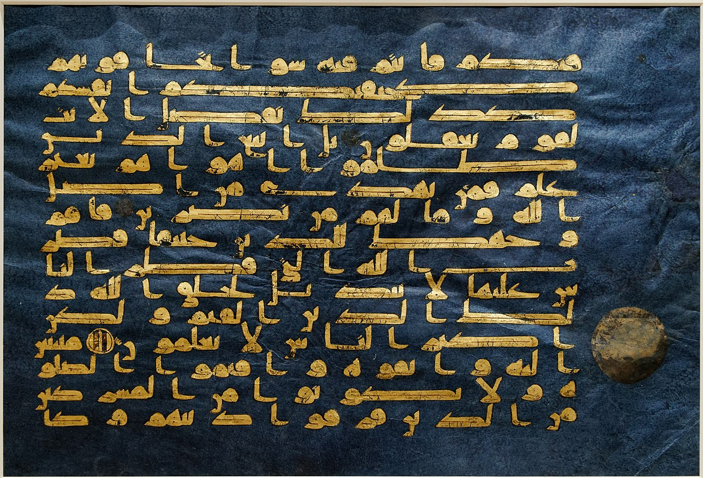
블루 꾸란(Blue Qur'an) · 9-10세기 북아프리카·안달루스 추정 · 인디고로 물들인 양피지에 금박 쿠파체로 쓴, 이슬람 서예의 정점 가운데 하나 · 메트로폴리탄 미술관 등 분장 소장 [Metropolitan Museum · Public Domain]
도판 모음 — Tasawir al-Nabi
예언자의 형상을 그리지 않는 전통 속에서, 칼리그라피와 성지, 필사본이 그의 이름을 대신해 남았다.
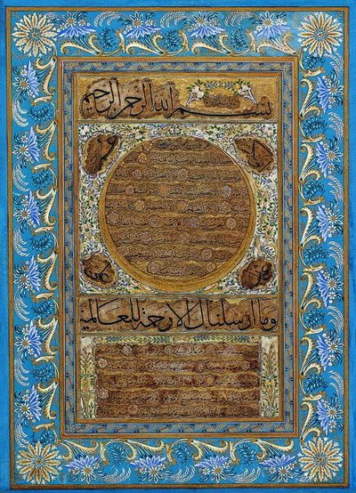
힐예이 셰리프 (두 번째) · 하피즈 오스만 · 17세기 오스만 글꼴 예술 [Wikimedia · Public Domain]
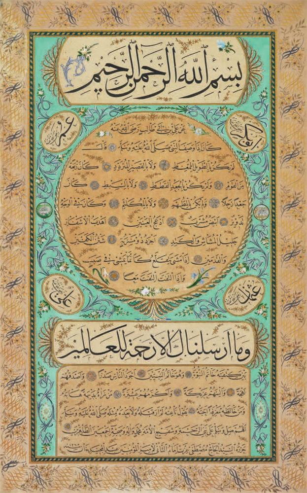
힐예이 셰리프 · 카자스케르 무스타파 이제트 에펜디, 19세기 · 후기 오스만 캘리그라피의 정점 [Wikimedia · Public Domain]